<!doctype html>
<html lang="en">
<head>
  <meta charset="utf-8">
  <meta name="viewport" content="width=device-width, initial-scale=1">
  <title>arxiv digest — 2026-07-22</title>
  <style>
:root {
  --bg: #ffffff;
  --fg: #1f2328;
  --muted: #59636e;
  --border: #d0d7de;
  --card: #f6f8fa;
  --link: #0969da;
}
body {
  max-width: 980px;
  margin: 0 auto;
  padding: 2rem 1rem 5rem;
  font-family: -apple-system, BlinkMacSystemFont, "Segoe UI", Helvetica, Arial, sans-serif;
  line-height: 1.55;
  color: var(--fg);
  background: var(--bg);
}
a { color: var(--link); }
img { max-width: 100%; height: auto; }
pre, code { background: var(--card); border-radius: 6px; }
pre { padding: 1rem; overflow-x: auto; }
blockquote { border-left: 4px solid var(--border); padding-left: 1rem; color: var(--muted); }
details { margin: 0.6rem 0; }
summary { cursor: pointer; font-weight: 600; }
.paper-figures-scroll {
  display: flex;
  gap: 1rem;
  overflow-x: auto;
  overscroll-behavior-x: contain;
  padding: 0.75rem 0.25rem 1rem;
  margin: 1rem 0 1.25rem;
  border-top: 1px solid var(--border);
  border-bottom: 1px solid var(--border);
  scroll-snap-type: x proximity;
}
.paper-figure-card {
  flex: 0 0 min(260px, 72vw);
  scroll-snap-align: start;
  background: var(--card);
  border: 1px solid var(--border);
  border-radius: 12px;
  padding: 0.55rem;
}
.paper-figure-card img {
  display: block;
  width: 100%;
  max-height: 240px;
  object-fit: contain;
  background: white;
  border-radius: 8px;
}
.paper-figure-caption {
  display: block;
  margin-top: 0.5rem;
  color: var(--muted);
  font-size: 0.85rem;
}
.figure-strip-hint {
  color: var(--muted);
  font-size: 0.9rem;
  margin-bottom: -0.3rem;
}
</style>
  <!-- MathJax: renders $...$ inline math and $$...$$ display math, plus
       \(...\) and \[...\]. Loaded from the official CDN; works offline
       once cached. Configured to skip code/pre blocks so arxiv IDs that
       look like dollar amounts don't get mangled. -->
  <script>
    window.MathJax = {
      tex: {
        inlineMath: [['$', '$'], ['\\(', '\\)']],
        displayMath: [['$$', '$$'], ['\\[', '\\]']],
        processEscapes: true,
        processEnvironments: true
      },
      options: {
        skipHtmlTags: ['script', 'noscript', 'style', 'textarea', 'pre', 'code'],
        ignoreHtmlClass: 'tex2jax_ignore',
        processHtmlClass: 'tex2jax_process'
      }
    };
  </script>
  <script id="MathJax-script" async
    src="https://cdn.jsdelivr.net/npm/mathjax@3/es5/tex-chtml.js"></script>
</head>
<body>
<header style="background-color: #333; color: white; padding: 15px; margin-bottom: 20px;">
  <h1 style="margin: 0; font-size: 24px;">
    <a href="https://ochelpan.github.io/arXiv_clean/" style="color: white; text-decoration: none;">Main</a>
  </h1>
</header>

<h1>Daily arXiv Report</h1>

<hr>
<p>
<a href="index.html">← Index</a>
 · <a href="papers_02.html">Next →</a>
</p>
<hr>

<h2>Papers 1–20</h2>
<p><a id="paper-2607.17295"></a></p>
<h3 id="truncated-wigner-approximation-for-spins-in-continuous-phase-space">⭐ <a href="http://arxiv.org/abs/2607.17295v1">Truncated Wigner approximation for spins in continuous phase space</a></h3>
<p><strong>Highlighted author(s):</strong> Michael Fleischhauer<br>
<strong>Authors:</strong> Jens Hartmann, Tom Schlegel, Viktoria Noel, Christopher D. Mink, Michael Fleischhauer<br>
<strong>Type:</strong> theory · <strong>Category:</strong> other · <strong>PDF:</strong> <a href="https://arxiv.org/pdf/2607.17295v1">https://arxiv.org/pdf/2607.17295v1</a><br>
<strong>Analysis basis:</strong> full PDF text, analyzed in chunks
<strong>Topic relevance:</strong> 🔥 <code>methods for driven-dissipative</code> <strong>5/5</strong> · 🔥 <code>Keldysh / 2PI / non-Gaussian methods</code> <strong>4/5</strong> · <code>correlated / nonlocal dissipation</code> <strong>3/5</strong> · <code>driven-dissipative phase transition</code> <strong>3/5</strong> · <code>exotic spin models in light-matter</code> <strong>3/5</strong> · <code>non-equilibrium dynamics</code> <strong>3/5</strong> · <code>analog quantum simulation</code> <strong>2/5</strong> · <code>non-equilibrium universality</code> <strong>2/5</strong> · <code>spintronics-quantum-optics interface</code> <strong>2/5</strong> · <code>Kondo &amp; dissipative impurity</code> <strong>1/5</strong> · <code>entanglement &amp; information structure</code> <strong>1/5</strong> · <code>measurement-induced transitions</code> <strong>1/5</strong> · <code>quantum measurements</code> <strong>1/5</strong> · <code>scars &amp; prethermalization</code> <strong>1/5</strong></p>
<div class="figure-strip-hint">↔ Scroll figures horizontally</div>
<div class="paper-figures-scroll">
<figure class="paper-figure-card">
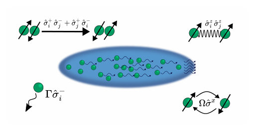
<figcaption class="paper-figure-caption"><b>Fig 1.</b> FIG. 1. The microscopic basis of a large class of quantum- many-body problems, ranging from magnetism to collective light emission, are interacting, open spin systems. The faith- ful description of their dynamics in large-scale systems re- mains, however, a major challenge.</figcaption>
</figure>
<figure class="paper-figure-card">
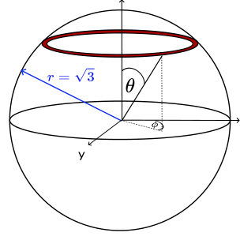
<figcaption class="paper-figure-caption"><b>Fig 2.</b> FIG. 2. Continuous phase-space representation of | ↑⟩state</figcaption>
</figure>
<figure class="paper-figure-card">
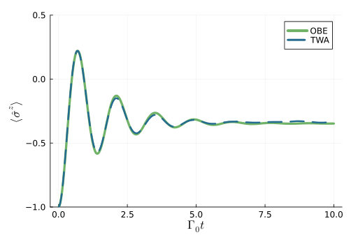
<figcaption class="paper-figure-caption"><b>Fig 3.</b> FIG. 3. Expectation value of ˆσz of a driven single spin starting in the ground state calculated with the optical Bloch equa- tions (green) as well as the TWA result (blue) for 104 trajec- tories. Here Ω= 2Γ0, and ∆= 1Γ0.</figcaption>
</figure>
<figure class="paper-figure-card">
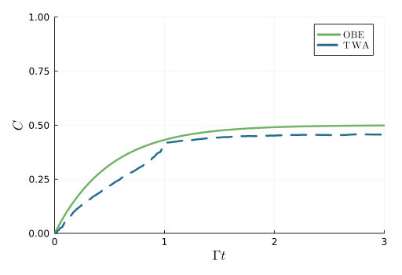
<figcaption class="paper-figure-caption"><b>Fig 4.</b> FIG. 4. Comparison of two-spin concurrence between exact dynamics from 2-particle OBE and TWA simulation upon Dicke decay. The initial state is |↑⟩|↓⟩.</figcaption>
</figure>
<figure class="paper-figure-card">
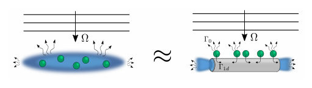
<figcaption class="paper-figure-caption"><b>Fig 5.</b> FIG. 6. Cigar-shaped ensemble of atoms driven perpendicular to the z-axis (left) and approximate one-dimensional waveg- uide model used for TWA simulations (right).</figcaption>
</figure>
</div>

<p><strong>Summary.</strong> This paper introduces and reviews the Truncated Wigner Approximation (TWA) as an efficient method to simulate complex, dissipative many-body spin systems. By mapping the density matrix onto a continuous phase space, it derives solvable stochastic differential equations governing system evolution. This allows for calculating key quantum observables like correlations and thermal states in systems ranging from magnetism to light emission.</p>
<p><strong>Why it may be interesting.</strong> This work provides a powerful, computationally tractable tool (TWA) to study open quantum dynamics in spin systems, bridging the gap between exact quantum descriptions and classical stochastic simulations, which is highly relevant for quantum optics and magnetism.</p>
<details>
<summary>Detailed structure</summary>
<p><strong>Main problem.</strong> The primary challenge is accurately simulating the complex, non-equilibrium dynamics of interacting and/or dissipative open spin systems.</p>
<p><strong>Main result.</strong> The authors successfully derive a computationally inexpensive stochastic differential equation (SDE) framework for describing these dynamics using the Truncated Wigner Approximation (TWA). This method allows calculation of expectation values, correlations, and thermal states.</p>
<p><strong>Method.</strong> The paper employs the Wigner-Moyal mapping to represent the density matrix in continuous phase space. The resulting evolution equation is approximated into a Fokker-Planck equation equivalent to Ito SDEs for the spin variables.</p>
<p><strong>Model / system.</strong> The focus is on open spin systems, modeled using a continuous SU(2) representation on an enlarged Bloch sphere. The dynamics are governed by mapping the Lindblad master equation onto phase-space evolution equations.</p>
<p><strong>Key observables.</strong> Expectation values of operators, multi-time correlations, spectra, thermal states, and ground state energies.</p>
<p><strong>Important parameters / regimes.</strong> The approximation quality depends on neglecting higher-order derivatives in the Fokker-Planck expansion; the method is benchmarked against exactly solvable models.</p>
<p><strong>Assumptions / limitations.</strong> Key assumptions include using controlled approximations to map the master equation to SDEs, and exploiting gauge freedom in the continuous phase space representation. It assumes that the path integral formulation can be rigorously mapped onto the curved phase space.</p>
<p><strong>Figures summary.</strong> Not specified by notes; the mathematical derivations focus on explicit formulas relating Pauli matrices to derivatives of the phase-point operator $\hat{\Delta}$ with respect to spherical coordinates $(	heta, \phi)$.</p>
<p><strong>Paper structure.</strong> The paper reviews the TWA framework, details the mapping from the Lindblad equation to SDEs via Wigner function evolution, discusses mathematical tools for this mapping (derivatives of phase-point operators), and benchmarks the method on various physical problems.</p>
</details>
<details>
<summary>Abstract</summary>
<p>We review the truncated Wigner approximation (TWA) for spins as a computationally inexpensive numerical approximation method to describe interacting and / or dissipative many-body spin systems. Using the Wigner-Moyal mapping from Hilbert space to a suitable phase space, the many-body density matrix is represented by a c-number distribution, the Wigner function. The gauge freedom in continuous phase space can be exploited to find positive Wigner functions for a large class of spin states, including entangled ones. Employing different sets of correspondence rules, we derive equations of motion for the Wigner function, which, applying controlled approximations, can be mapped to stochastic differential equations. This allows a computationally inexpensive simulation of expectation values. Using a phase-space analog of the quantum regression theorem also multi-time correlations and spectra can be obtained. To illustrate the potential of the method, we benchmark the TWA for spins with some exactly solvable problems of interacting, dissipative spin systems, and then discuss its application to collective processes, such as the superradiant emission of light. Extending the TWA to imaginary time furthermore provides a tool to approximately calculate thermal and ground states of spin Hamiltonians. Finally, we show that the TWA stochastic equations can equivalently be derived within a path-integral approach, provided that the operator products in the dissipator are rigorously mapped onto the curved phase space.</p>
</details>
<p><sub><a href="#top">↑ back to top</a></sub></p>

<p><a id="paper-2607.17334"></a></p>
<h3 id="coexistence-of-long-and-quasi-long-range-spatial-order-in-1d-quantum-quasicrystals">⭐ <a href="http://arxiv.org/abs/2607.17334v1">Coexistence of long- and quasi-long range spatial order in 1D quantum quasicrystals</a></h3>
<p><strong>Highlighted author(s):</strong> T. Donner, F. Piazza<br>
<strong>Authors:</strong> A. Mendoza-Coto, M. Grossklags, J. Stefaniak, T. Donner, F. Piazza<br>
<strong>Type:</strong> both · <strong>Category:</strong> other · <strong>PDF:</strong> <a href="https://arxiv.org/pdf/2607.17334v1">https://arxiv.org/pdf/2607.17334v1</a><br>
<strong>Analysis basis:</strong> full PDF text, analyzed in chunks
<strong>Topic relevance:</strong> 🔥 <code>analog quantum simulation</code> <strong>4/5</strong> · <code>Keldysh / 2PI / non-Gaussian methods</code> <strong>3/5</strong> · <code>correlated cavity matter</code> <strong>3/5</strong> · <code>Tavis-Cummings &amp; cavity-many-emitter</code> <strong>2/5</strong> · <code>driven-dissipative phase transition</code> <strong>2/5</strong> · <code>Frenkel-Kontorova</code> <strong>1/5</strong> · <code>methods for driven-dissipative</code> <strong>1/5</strong> · <code>quantum optics experiment</code> <strong>1/5</strong></p>
<div class="figure-strip-hint">↔ Scroll figures horizontally</div>
<div class="paper-figures-scroll">
<figure class="paper-figure-card">
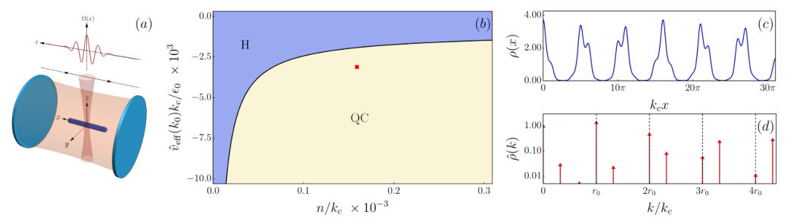
<figcaption class="paper-figure-caption"><b>Fig 1.</b> Figure 1. (a) Schematic cavity QED experimental setup for the implementation of laser painted interactions. The elongated BEC is coupled to the standing wave of the cavity and periodically scanned by the structured laser inducing a finite range on demand effective interaction. (b) Ground-state phase diagram of the system for a laser beam profile ˆΩ(k) exciting a finite wave vector k0, with ˆveff(k0)kc/ϵ0 and the density n/kc used as running parameters. The red square corresponds to n/kc = 0.159 × 10−3 and ˆveff(k0)kc/ϵ0 = −3.140 × 103. (c) and (d) Typical QC density profile in real and momentum space corresponding to the highlighted red square in (b), in (d) r0 has been chosen as |k0...</figcaption>
</figure>
<figure class="paper-figure-card">
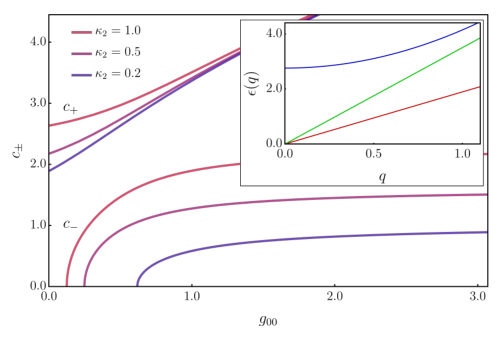
<figcaption class="paper-figure-caption"><b>Fig 2.</b> Figure 2. Velocity of the two gapless modes as a function of the hydrodynamic action parameters g00 and κ2, while the others are fixed as follows: Γ = (1 + √</figcaption>
</figure>
<figure class="paper-figure-card">
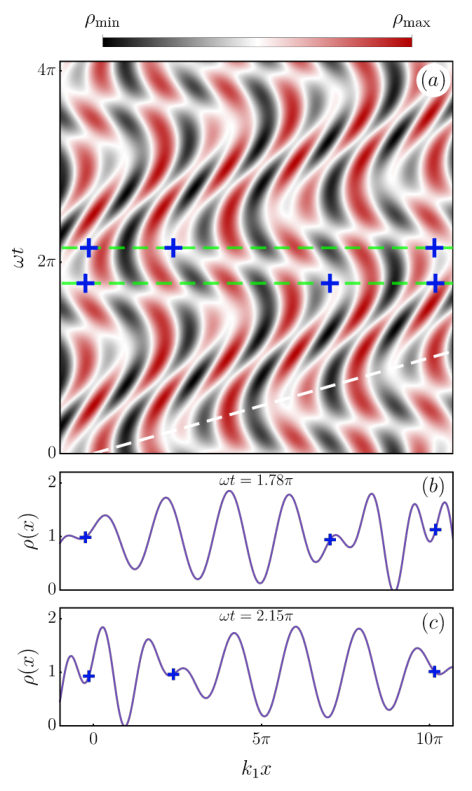
<figcaption class="paper-figure-caption"><b>Fig 3.</b> Figure 3. (a) Space-time local density behavior of a 1D QC phase under the propagation of a long-wavelength excitation in the model considered for gapless excitations. The white dashed line corresponds to the curve x = cst, where cs rep- resents the sound velocity of the excitation mode. The green lines corresponds to two different values of t at which the in- stantaneous density profiles are presented in (b) and (c). The blue crosses marks the position of the defects in the corre- sponding modulated patterns.</figcaption>
</figure>
<figure class="paper-figure-card">
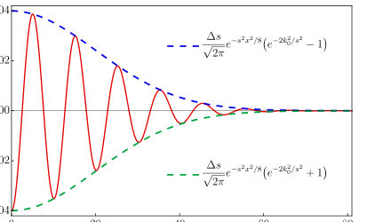
<figcaption class="paper-figure-caption"><b>Fig 4.</b> Figure 4. Real-space behavior of the cavity-mediated interac- tion veff(x), shown as a solid red line. Dashed blue and green lines correspond to the upper and lower envelopes of the po- tential, respectively.</figcaption>
</figure>
</div>

<p><strong>Summary.</strong> This paper theoretically investigates 1D quantum quasicrystals realized using ultracold bosonic atoms in optical cavities. By analyzing the low-energy excitations, the authors demonstrate a unique mechanism where selective gapping of Goldstone modes allows for the coexistence of true long-range order and quasi-long-range order simultaneously. This provides a novel platform to study complex ordering phenomena beyond standard periodic systems.</p>
<p><strong>Why it may be interesting.</strong> This work is highly relevant as it bridges concepts from quantum optics (cavity QED implementation) with advanced condensed matter physics (quasicrystals), providing a concrete platform for studying exotic many-body order parameters in ultracold atom systems.</p>
<details>
<summary>Detailed structure</summary>
<p><strong>Main problem.</strong> The study investigates the unique physical scenario in one-dimensional quantum quasicrystals where Goldstone modes can selectively gap, leading to a coexistence of true long-range order and quasi-long-range order.</p>
<p><strong>Main result.</strong> The system exhibits distinct ordering regimes: true long-range order is found at the gapped wave vector component, while quasi-long-range order persists at the remaining gapless component due to sustained fluctuations.</p>
<p><strong>Method.</strong> The analysis employs a combination of spectral variational methods and the coherent-state path-integral formalism to derive an effective hydrodynamic action for low-energy excitations.</p>
<p><strong>Model / system.</strong> The model is a quasi-one-dimensional Bose-Einstein condensate (BEC) trapped in an optical cavity, whose interactions are engineered via laser-painted potentials to mimic quasicrystalline coupling.</p>
<p><strong>Key observables.</strong> Gap structure of Goldstone modes (gapped vs. gapless), phase correlation functions ($\langle\hat{\delta}_1\hat{\delta}_1
angle$, $\langle\hat{\delta}_2\hat{\delta}_2
angle$), and the excitation velocities ($c_\pm$).</p>
<p><strong>Important parameters / regimes.</strong> The coupling parameters ($\kappa_2$) controlling mode hybridization, system size ($L$), and the ratio of incommensurate wave vectors ($\Gamma = k_2/k_1$).</p>
<p><strong>Assumptions / limitations.</strong> The analysis assumes a 1D reduction from transverse dimensions and relies on approximations within the hydrodynamic regime for low-energy excitations.</p>
<p><strong>Figures summary.</strong> Figures illustrate the schematic setup using cavity QED, ground-state phase diagrams showing transitions between phases (H and QC), and space-time local density behavior under propagating long-wavelength excitations.</p>
<p><strong>Paper structure.</strong> The paper proceeds by deriving the effective quadratic action for fluctuations ($\delta S$) in the hydrodynamic limit. It then analyzes the resulting dispersion relations, identifying three modes: one gapped mode ($\omega_1 \propto q^2$) and two gapless modes ($\omega_\pm \propto q$). Finally, it calculates correlation functions to confirm the distinct ordering regimes.</p>
</details>
<details>
<summary>Abstract</summary>
<p>Quasicrystals exhibit long-range positional order without periodicity, arising from multiple incommensurate wave vectors. In self-assembled quasicrystals, the spontaneous breaking of translational invariance gives rise to two Goldstone modes-phonons and phasons-associated with two competing wave vectors. Here, we demonstrate a unique scenario exclusive to quasicrystals: a mechanism that gaps out only one Goldstone mode (associated with one wave vector), while the other remains gapless. In one dimension, this leads to the coexistence of long-range order at the gapped wave vector and quasi-long-range order at the gapless one, due to sustained fluctuations. We show that this phenomenon can be realized using ultracold bosonic atoms in optical cavities.</p>
</details>
<p><sub><a href="#top">↑ back to top</a></sub></p>

<p><a id="paper-2607.16394"></a></p>
<h3 id="entanglement-entropy-in-quantum-networks-with-tunable-geometry">⭐ <a href="http://arxiv.org/abs/2607.16394v1">Entanglement Entropy in Quantum Networks with Tunable Geometry</a></h3>
<p><strong>Highlighted author(s):</strong> Andrew J. Daley<br>
<strong>Authors:</strong> Andrea Azzali, Sridevi Kuriyattil, Andrew J. Daley, Marilù Chiofalo<br>
<strong>Type:</strong> theory · <strong>Category:</strong> disordered systems and neural networks · <strong>PDF:</strong> <a href="https://arxiv.org/pdf/2607.16394v1">https://arxiv.org/pdf/2607.16394v1</a><br>
<strong>Analysis basis:</strong> full PDF text, analyzed in chunks
<strong>Topic relevance:</strong> 🔥 <code>entanglement &amp; information structure</code> <strong>4/5</strong> · <code>analog quantum simulation</code> <strong>3/5</strong> · <code>non-equilibrium dynamics</code> <strong>3/5</strong> · <code>non-equilibrium universality</code> <strong>2/5</strong> · <code>correlated / nonlocal dissipation</code> <strong>1/5</strong> · <code>driven-dissipative phase transition</code> <strong>1/5</strong> · <code>methods for driven-dissipative</code> <strong>1/5</strong></p>
<div class="figure-strip-hint">↔ Scroll figures horizontally</div>
<div class="paper-figures-scroll">
<figure class="paper-figure-card">
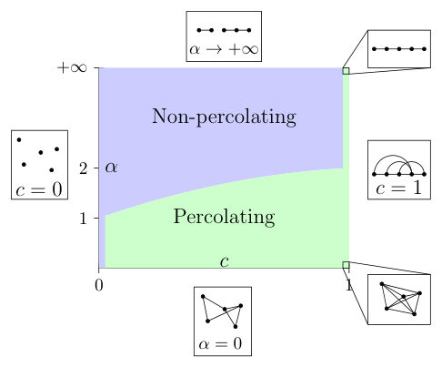
<figcaption class="paper-figure-caption"><b>Fig 1.</b> FIG. 1. Schematic view of the classical phase diagram [36] for the graph model in Eq. (1) in the space of the two param- eters (c, α). The non-percolating region comprises the upper area of the plot and the c = 0 line (here enlarged for clarity). The percolating region includes the lower area and the c = 1 line (also enlarged). The insets show typical graphs for spe- cific values of the parameters corresponding to the following benchmarks: totally disconnected (c = 0); nearest-neighbors connected (c = 1), including the 1D chain (α →+∞) and the fully-connected (α = 0); the Erd˝os - R´enyi model (α = 0); the 1D chain with missing links (α →+∞). It should be noticed that, tuning the...</figcaption>
</figure>
<figure class="paper-figure-card">
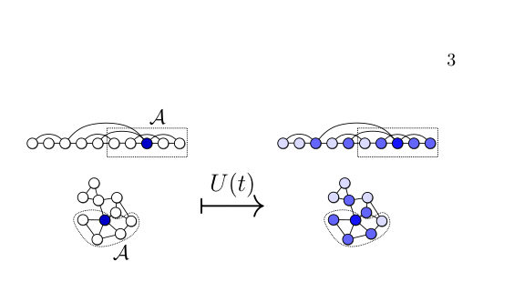
<figcaption class="paper-figure-caption"><b>Fig 2.</b> FIG. 2. Schematic depiction of the simulation performed on each graph sample. The figure shows the system before (left) and after (right) unitary time evolution U(t); the two snap- shots are represented according to the Euclidean geometry (top) and highlighting the graph structure (bottom). For each graph sample, the simulation is performed in the follow- ing way: The system is divided into two halves, subsystem A and its complementary A, and is initialized with a single particle in A. Then, unitary time evolution U(t) induced by the Hamiltonian of (3) acts on the system. This schematic figure highlights that the spreading is more easily understood in terms of the graph geometry, rather...</figcaption>
</figure>
<figure class="paper-figure-card">
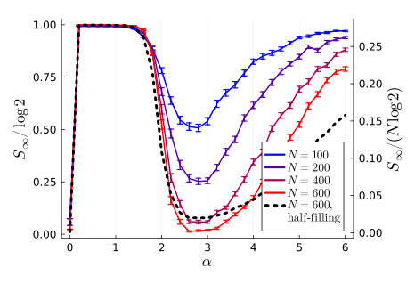
<figcaption class="paper-figure-caption"><b>Fig 3.</b> FIG. 3. Asymptotic entanglement entropy S∞as a func- tion of α at c = 1. This figure represents one main result: The asymptotic entanglement entropy exhibits a new local- ized regime at intermediate values of α, while recovering the limiting behaviors at nearest-neighbors and all-to-all. This behavior is present both in the single-particle case (solid lines, left y axis) and in the half-filling case (dashed line, right y axis).</figcaption>
</figure>
<figure class="paper-figure-card">
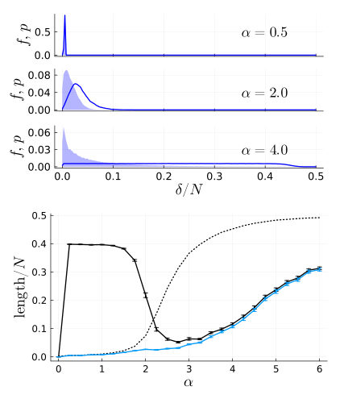
<figcaption class="paper-figure-caption"><b>Fig 4.</b> FIG. 4. (a,b,c) Classical vs. quantum distributions for the graphs, with respect to α. For different values of α in each subplot, we show the fraction f(δ) of nodes (solid lines) and the probability p(δ) at a graph distance δ (shaded regions). (d) Asymptotic wavefunction spreading as a function of α. The curves represent the spreading length-scale in the Eu- clidean (black, solid line) and graph (light blue line) geome- try. The dotted line is the maximum graph distance from the site located at N/2. All data in this figure refer to N = 400.</figcaption>
</figure>
</div>

<p><strong>Summary.</strong> This paper analyzes how varying the geometric structure of quantum interactions on a random graph affects quantum dynamics. By tuning the interaction range via parameter $\alpha$, the authors find an unexpected intermediate regime exhibiting structural disorder-induced localization, which is diagnosed robustly through asymptotic entanglement entropy measurements.</p>
<p><strong>Why it may be interesting.</strong> The work provides a concrete model for structural disorder (amorphous materials) where connectivity is tunable, offering insights into localization mechanisms beyond standard Anderson models using entanglement entropy as the diagnostic tool.</p>
<details>
<summary>Detailed structure</summary>
<p><strong>Main problem.</strong> The study investigates how the geometric structure of quantum graphs, defined by tunable long-range interactions, influences quantum dynamics, particularly entanglement growth and localization.</p>
<p><strong>Main result.</strong> The authors identify a novel intermediate localized regime for entanglement entropy ($S_\infty$) as the interaction range parameter ($\alpha$) is tuned, contradicting simple expectations based on increasing connectivity.</p>
<p><strong>Method.</strong> The research employs numerical simulations to compute entanglement entropy ($S$) in both single-particle and half-filling fermionic regimes, comparing results against theoretical benchmarks like random Gaussian states.</p>
<p><strong>Model / system.</strong> The model uses quantum many-body Hamiltonians with two-body interactions represented on a random graph. The connectivity is controlled by an effective range parameter $\alpha$, allowing interpolation between nearest-neighbor and all-to-all couplings.</p>
<p><strong>Key observables.</strong> Asymptotic entanglement entropy ($S_\infty$), Inverse Participation Ratio (IPR), and the saturation timescale ($t^*$).</p>
<p><strong>Important parameters / regimes.</strong> The geometric control parameter $\alpha$ (power-law decay of link probability) and connectivity parameters $c$.</p>
<p><strong>Assumptions / limitations.</strong> For the half-filling case, hard-core bosons are approximated by spinless fermions. The analysis relies on studying the asymptotic behavior in the thermodynamic limit.</p>
<p><strong>Figures summary.</strong> Figures illustrate how $S_\infty$ varies non-monotonically with $\alpha$, showing a localized minimum; they also compare entanglement entropy calculations across different bipartitions (e.g., even/odd vs. left/right) and analyze saturation timescales ($t^*$) versus $\alpha$.</p>
<p><strong>Paper structure.</strong> The paper systematically analyzes the single-particle case, establishing the dependence of $S_\infty$ on $\alpha$, before extending these findings to the half-filling fermionic system. The analysis is reinforced by comparing results from different bipartitions and examining scaling properties in the large-$\alpha$ limit.</p>
</details>
<details>
<summary>Abstract</summary>
<p>Quantum many-body Hamiltonians with two-body interactions can be represented by graphs, with sites as nodes and two-site couplings as edges. We investigate how the geometry of these graphs affects transport and entanglement growth. To do so, we study dynamics for quantum hopping on a random graph model with an effective range parameter. Tuning it, we interpolate between nearest-neighbor and all-to-all graphs, identifying a new localization regime that is robust in both single-particle and finite-density cases. This provides a model of Anderson localization induced by structural disorder, with implications for amorphous materials and tunable-range analog quantum simulators.</p>
</details>
<p><sub><a href="#top">↑ back to top</a></sub></p>

<p><a id="paper-2607.17302"></a></p>
<h3 id="chiral-entangled-state-generation-through-dissipative-quantum-dynamics"><a href="http://arxiv.org/abs/2607.17302v1">Chiral Entangled-State Generation through Dissipative Quantum Dynamics</a></h3>
<p><strong>Authors:</strong> Huixia Gao, Konghao Sun, Yiwen Han, Lei Xiao, Dengke Qu, Kunkun Wang, Xiang Zhan, Wei Yi, Peng Xue<br>
<strong>Type:</strong> both · <strong>Category:</strong> quantum information and computing · <strong>PDF:</strong> <a href="https://arxiv.org/pdf/2607.17302v1">https://arxiv.org/pdf/2607.17302v1</a><br>
<strong>Analysis basis:</strong> full PDF text, analyzed in chunks
<strong>Topic relevance:</strong> 🔥 <code>quantum optics experiment</code> <strong>5/5</strong> · 🔥 <code>entanglement &amp; information structure</code> <strong>4/5</strong> · 🔥 <code>methods for driven-dissipative</code> <strong>4/5</strong> · <code>analog quantum simulation</code> <strong>3/5</strong> · <code>correlated / nonlocal dissipation</code> <strong>3/5</strong> · <code>driven-dissipative phase transition</code> <strong>3/5</strong> · <code>non-equilibrium dynamics</code> <strong>3/5</strong> · <code>Keldysh / 2PI / non-Gaussian methods</code> <strong>2/5</strong> · <code>QC/QI experiment</code> <strong>2/5</strong> · <code>non-equilibrium universality</code> <strong>2/5</strong> · <code>Tavis-Cummings &amp; cavity-many-emitter</code> <strong>1/5</strong> · <code>correlated cavity matter</code> <strong>1/5</strong> · <code>interference shaping light</code> <strong>1/5</strong> · <code>measurement-induced transitions</code> <strong>1/5</strong> · <code>quantum measurements</code> <strong>1/5</strong></p>
<div class="figure-strip-hint">↔ Scroll figures horizontally</div>
<div class="paper-figures-scroll">
<figure class="paper-figure-card">
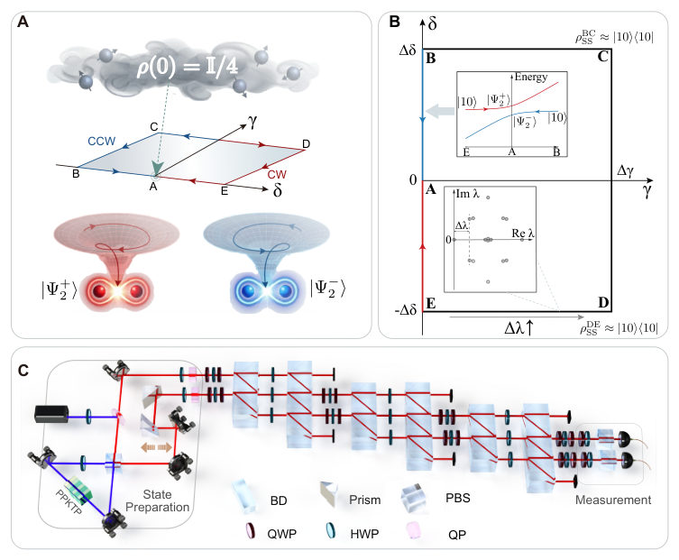
<figcaption class="paper-figure-caption"><b>Fig 1.</b> FIG. 1. Chiral Bell-state generation on a programmable photonic platform. (a) Conceptual illustration of our protocol. The system is initialized in the maximally mixed state ρ(0) = I/4. Slow parametric variation along a closed rectangu- lar loop in the (γ, δ) plane prepares different Bell states depending on the chirality of the path: clockwise (CW, red) evolution yields |Ψ+ 2 ⟩, whereas counterclockwise (CCW, blue) evolution yields |Ψ− 2 ⟩. The tilted rectangle schematically indicates the control loop in the parameter space spanned by γ and δ. (b) Encircling path and mechanism. The system evolves along a rectangular path labeled by ABCDE, with red (blue) arrows indicating the CW (CCW)...</figcaption>
</figure>
<figure class="paper-figure-card">
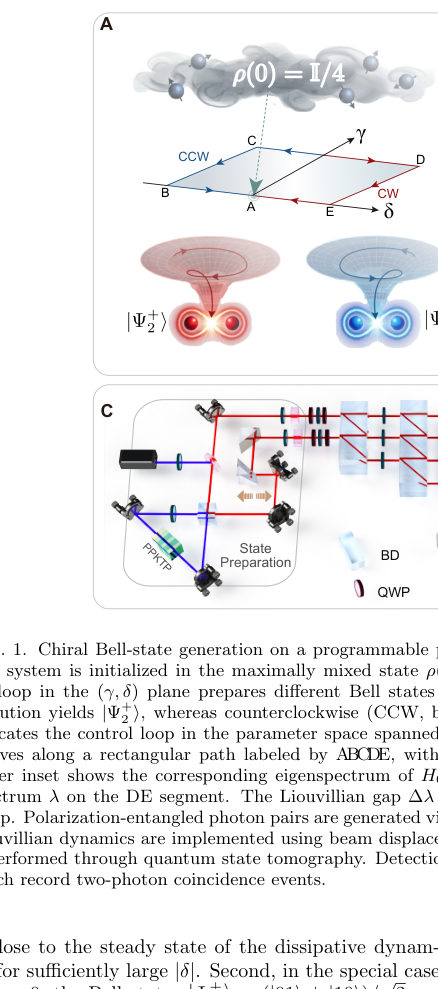
<figcaption class="paper-figure-caption"><b>Fig 2.</b> Figure 1(a) summarizes the central results of our work. Starting from the maximally mixed state ρ(0) = I/4, a slow closed-loop variation of the system param- eters in the (γ, δ) plane prepares different Bell states depending solely on the chirality of the loop: clockwise (CW) encircling drives the system to |Ψ+ 2 ⟩, whereas counterclockwise (CCW) encircling drives it to |Ψ− 2 ⟩. While the chiral entanglement generation is appar- ently similar to chiral state transfer close to excep- tional points (EPs), our scheme is based on more gen- eral mechanisms that do not necessarily involve EPs.</figcaption>
</figure>
<figure class="paper-figure-card">
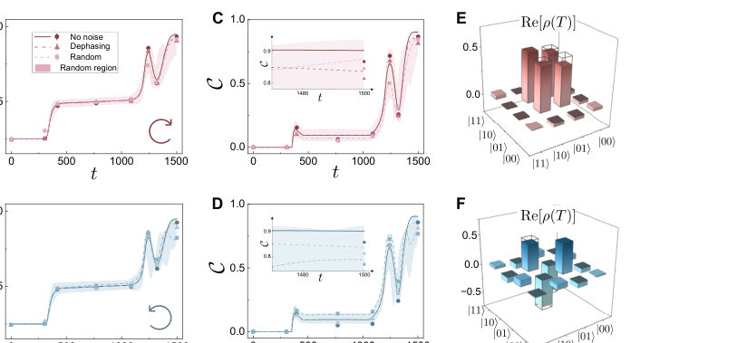
<figcaption class="paper-figure-caption"><b>Fig 3.</b> FIG. 2. Chiral Bell-state generation. (a), (b) Time evolution of the fidelities F+ 2 (t) and F− 2 (t) for the CW and CCW encircling, respectively. (c), (d) Time evolution of the concurrence for the CW and CCW encircling, respectively. (e), (f) Reconstructed final density matrices obtained from quantum state tomography following the CW and CCW encircling, respectively. Parameters: ξ = 1, g = 0.01, ϵ = 1.2, T = 1500, N = 200. Red curves denote the CW evolution, and blue curves denote the CCW evolution. Solid, dashed and dash-dotted curves correspond to results without noise, with dephasing, and with random perturbations, respectively. Shaded regions indicate the range of outcomes from 10...</figcaption>
</figure>
<figure class="paper-figure-card">
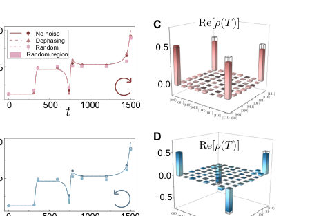
<figcaption class="paper-figure-caption"><b>Fig 4.</b> FIG. 3. Chiral preparation of multi-qubit entanglement. (a), (b) The fidelities between the evolved states and the target entangled states are shown for CW and CCW encir- cling, respectively. (c), (d) Reconstructed final density ma- trices obtained from quantum state tomography following the CW and CCW encircling, respectively. The encircling time is T = 1500, the initial state is I/8, and the parameter Jx = 1.</figcaption>
</figure>
<figure class="paper-figure-card">
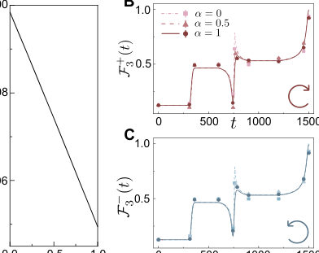
<figcaption class="paper-figure-caption"><b>Fig 5.</b> FIG. 4. Chiral generation of GHZ states under the hy- brid Liouvillian formalism. (a) Final-state fidelity F + 3 (T) (F − 3 (T)) with respect to Ψ+ 3 ( Ψ− 3 ) under CW (CCW) encircling as a function of the post-selection strength α. (b), (c) Time evolution of the fidelities with respect to Ψ+ 3 and Ψ− 3 under CW encircling in (b) and CCW encircling in (c), for three representative post-selection strengths α = 0, 0.5, and 1. The other parameters are the same as those used in Fig. 3.</figcaption>
</figure>
</div>

<p><strong>Summary.</strong> The authors propose a new paradigm for generating entangled quantum states using dissipative dynamics, where the final state depends on whether the system's evolution follows a clockwise or counterclockwise path. By simulating this process with photon pairs and extending it to three qubits, they demonstrate that chiral control offers a robust, high-fidelity method for scalable entanglement generation.</p>
<p><strong>Why it may be interesting.</strong> This work is highly relevant for AMO/Quantum Optics as it provides an experimentally verifiable method (using photon pairs) to generate high-quality entanglement deterministically by controlling the path topology in parameter space, moving beyond simple steady-state preparation.</p>
<details>
<summary>Detailed structure</summary>
<p><strong>Main problem.</strong> The paper demonstrates a novel method for generating entangled quantum states where the final state is determined by the chirality (direction) of the evolution path in parameter space.</p>
<p><strong>Main result.</strong> Chiral dynamics provides a scalable, robust, and controllable route to high-fidelity entanglement generation in dissipative systems, confirmed across two and three qubits.</p>
<p><strong>Method.</strong> The protocol combines driven-dissipative steady-state engineering with adiabatic passage by simulating Liouvillian dynamics using the quantum Langevin equation for experimental realization.</p>
<p><strong>Model / system.</strong> The system uses an interacting two-qubit or three-qubit platform, where qubits are encoded in photon polarizations. The evolution is governed by a Lindblad master equation incorporating non-Hermitian effective Hamiltonians and dissipation terms.</p>
<p><strong>Key observables.</strong> Fidelity ($F$) with respect to target Bell/GHZ states and Concurrence ($C$), which are monitored as functions of time and path chirality.</p>
<p><strong>Important parameters / regimes.</strong> The parameters include the coupling strengths ($\gamma, \delta$), the post-selection strength $\alpha$ (ranging from 0 to 1), and the path geometry in parameter space.</p>
<p><strong>Assumptions / limitations.</strong> The scheme relies on careful design of the Hamiltonian, quantum jump processes, and the encircling path; fidelity decreases with increasing $\alpha$ due to reduced state purity.</p>
<p><strong>Figures summary.</strong> Figures illustrate conceptual protocols showing CW vs CCW evolution leading to different Bell states. Time evolution plots show high fidelities and concurrences maintained across varying parameters ($\alpha$) for both chiral paths.</p>
<p><strong>Paper structure.</strong> The paper develops the concept by first establishing the two-qubit case, demonstrating chirality dependence via path encircling. It then extends this robust mechanism to three qubits using a hybrid Liouvillian formalism, confirming persistence across different levels of dissipation control ($\alpha$).</p>
</details>
<details>
<summary>Abstract</summary>
<p>Dissipation, though often detrimental to quantum entanglement, can be manipulated for the preparation of entangled states, wherein ingeniously designed quantum jump processes drive the system toward the desired steady state. Here we venture beyond this paradigm, and demonstrate a new type of entanglement generation in dissipative quantum dynamics. Combining driven-dissipative steady-state engineering and adiabatic passage, we propose a general protocol where the final entangled state depends on the chirality of the evolution path in the parameter space, a scheme that is further extendable to multipartite entanglement. By simulating the Liouvillian dynamics through the quantum Langevin equation for a pair of photons, we experimentally confirm the noise-resistant chiral preparation of various entangled states with high fidelity and concurrence. Our work establishes parametric chiral dynamics as a scalable and robust tool for controllable entanglement generation, paving the way for its applications in quantum information.</p>
</details>
<p><sub><a href="#top">↑ back to top</a></sub></p>

<p><a id="paper-2607.16515"></a></p>
<h3 id="stroboscopic-stability-of-a-floquet-chiral-spin-liquid-beyond-the-folding-frequency"><a href="http://arxiv.org/abs/2607.16515v1">Stroboscopic stability of a Floquet chiral spin liquid beyond the folding frequency</a></h3>
<p><strong>Authors:</strong> Didier Poilblanc<br>
<strong>Type:</strong> theory · <strong>Category:</strong> strongly correlated electrons · <strong>PDF:</strong> <a href="https://arxiv.org/pdf/2607.16515v1">https://arxiv.org/pdf/2607.16515v1</a><br>
<strong>Analysis basis:</strong> full PDF text, analyzed in chunks
<strong>Topic relevance:</strong> 🔥 <code>scars &amp; prethermalization</code> <strong>5/5</strong> · 🔥 <code>analog quantum simulation</code> <strong>4/5</strong> · 🔥 <code>non-equilibrium dynamics</code> <strong>4/5</strong> · <code>driven-dissipative phase transition</code> <strong>3/5</strong> · <code>exotic spin models in light-matter</code> <strong>3/5</strong> · <code>methods for driven-dissipative</code> <strong>2/5</strong> · <code>non-equilibrium universality</code> <strong>2/5</strong> · <code>Keldysh / 2PI / non-Gaussian methods</code> <strong>1/5</strong> · <code>entanglement &amp; information structure</code> <strong>1/5</strong></p>
<div class="figure-strip-hint">↔ Scroll figures horizontally</div>
<div class="paper-figures-scroll">
<figure class="paper-figure-card">
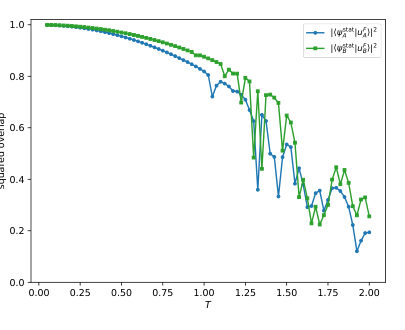
<figcaption class="paper-figure-caption"><b>Fig 1.</b> Figure 1: Left: doublet splitting ∆F AB and isolation ∆F iso measured on the quasienergy circle, versus the drive period T. Dotted lines: static values rescaled by 1/2 (high-frequency limit HF →H/2). Right: squared overlaps of the Floquet doublet eigenstates with the static CSL doublet.</figcaption>
</figure>
<figure class="paper-figure-card">
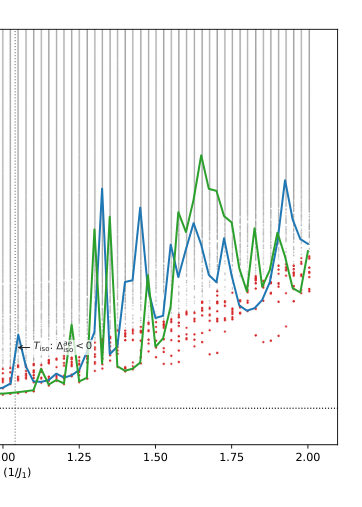
<figcaption class="paper-figure-caption"><b>Fig 2.</b> Figure 2: Average-energy spectrum versus T (grey: all 12870 levels; red: lowest eight; blue/green: the topological doublet followed by overlap). The key periods Tfold, Tdeg, Tres, Tiso are marked. The doublet remains the isolated bottom of the average-energy spectrum far beyond Tres, up to Tiso ≃1.04.</figcaption>
</figure>
<figure class="paper-figure-card">
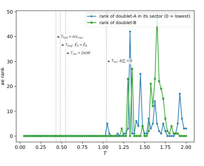
<figcaption class="paper-figure-caption"><b>Fig 3.</b> Figure 3: Left: doublet splitting and signed isolation in average energy (negative if an intruder lies below the doublet top). Right: rank of the doublet states in the average-energy ordering of their own symmetry sector (0 = lowest).</figcaption>
</figure>
<figure class="paper-figure-card">
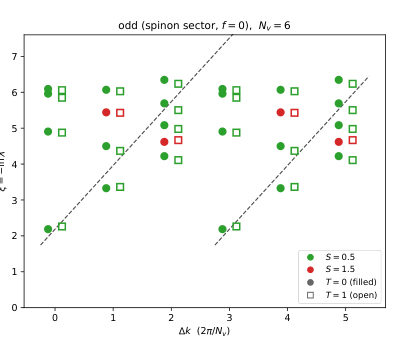
<figcaption class="paper-figure-caption"><b>Fig 4.</b> Figure 4: Spin-resolved entanglement spectrum of the optimal chiral PEPS on an infinite cylinder of circumference Nv = 6, in the physical vacuum sector [even parity, flux f=π; left] and spinon sector [odd parity, f=0; right], for the static (T=0, filled circles) and Floquet-optimized (T=1, open squares) tensors, versus ∆k, the momentum measured from the tower base along the chirality direction. Colors encode the total spin S of each multiplet. Dashed lines: a single straight chiral branch, fitted through the degeneracy-weighted barycenters of the first four even tower levels (left), and the same branch (identical slope, as required for the SU(2)1 chiral edge) anchored at the two degenerate...</figcaption>
</figure>
<figure class="paper-figure-card">
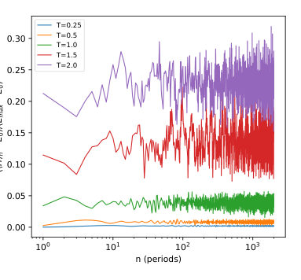
<figcaption class="paper-figure-caption"><b>Fig 5.</b> Figure 5: Stroboscopic evolution |ψ(nT)⟩= Un F |ψstat A ⟩up to n = 2000 periods, for several drive periods T. Left: fidelity to the initial state. Right: absorbed energy normalized to the full many-body bandwidth.</figcaption>
</figure>
</div>

<p><strong>Summary.</strong> The paper investigates how a chiral spin liquid remains stable when subjected to rapid, periodic driving (Floquet engineering). By analyzing the system's quasienergy spectrum and average energy, the authors show that the topological properties persist deep into the folded regime, suggesting stability is governed by local physics rather than global bandwidth. This confirms the potential for robust prethermal quantum states in driven correlated matter.</p>
<p><strong>Why it may be interesting.</strong> This work directly addresses non-equilibrium many-body physics in strongly correlated systems, providing concrete evidence for prethermalization mechanisms that stabilize topological order under periodic driving, which has implications for quantum simulation and engineered materials.</p>
<details>
<summary>Detailed structure</summary>
<p><strong>Main problem.</strong> The study investigates the stroboscopic stability of a Floquet chiral spin liquid (CSL) when driven by an alternating Hamiltonian, specifically examining its persistence beyond the frequency where folded states first cross the quasienergy spectrum.</p>
<p><strong>Main result.</strong> The topological doublet survives the drive far past the initial crossing point ($\omega_{	ext{res}}$), suggesting stability is controlled by local energy scales rather than the extensive bandwidth. This implies a prethermal CSL phase should persist in the thermodynamic limit.</p>
<p><strong>Method.</strong> The authors compute the one-period propagator exactly and use multiple diagnostics—including quasienergy splitting, average energy ordering, and stroboscopic time evolution—to track the topological doublet's stability across varying driving frequencies.</p>
<p><strong>Model / system.</strong> The system is modeled by a chiral J1–J2–K Heisenberg model on a $4	imes4$ torus. The dynamics are governed by two-step Floquet evolution alternating between a non-chiral part ($H_{	ext{AF}}$) and a chiral plaquette part ($H_K$).</p>
<p><strong>Key observables.</strong> Topological doublet quasienergy splitting ($\Delta_{F}^{	ext{AB}}$), isolation gap ($\Delta_{F}^{	ext{iso}}$), time-averaged energy ($ar{E}_n$), and stroboscopic heating rates.</p>
<p><strong>Important parameters / regimes.</strong> The driving frequency ($\omega$) relative to the resonance frequency ($\omega_{	ext{res}} \simeq 11.5 J_1$), and the optimal parameter point for the static CSL state: $(	heta/\pi, K, J_2) = (0.325, 0.20, 0.40)$.</p>
<p><strong>Assumptions / limitations.</strong> The analysis relies on geometric Floquet theory to define meaningful diagnostics when quasienergies fold; the PEPS description assumes the state can be captured by a $D=3$ chiral ansatz.</p>
<p><strong>Figures summary.</strong> Figures track the doublet's spectrum vs. period, showing spectral folding patterns and confirming that the average energy remains ordered at the bottom of the spectrum even after quasienergy crossings occur.</p>
<p><strong>Paper structure.</strong> The paper first establishes the static model and its topological CSL phase via optimization. It then analyzes the Floquet dynamics by computing the one-period propagator and applying multiple diagnostics (quasienergy, average energy) to track stability as the driving frequency is varied across resonance points.</p>
</details>
<details>
<summary>Abstract</summary>
<p>We study the two-step Floquet dynamics of the chiral $J_1$-$J_2$-$K$ Heisenberg model on the $4\times4$ torus, alternating its non-chiral Heisenberg part $H_{\rm AF}$ and its chiral plaquette part $H_K$, at the parameter point where the static model (recovered in the infinite frequency limit) hosts a quasi-degenerate, spectrally isolated chiral-spin-liquid (CSL) topological doublet. The one-period propagator is computed exactly in all momentum/rotation symmetry sectors. It is shown that, decreasing the frequency, the topological doublet survives the drive far beyond the frequency $ω_{\mathrm{res}}\simeq 11.5 J_1$ at which folded states first cross it in quasienergy: the time-averaged energy of the Floquet eigenstates, which orders the folded Floquet spectrum, shows that the doublet remains the isolated bottom of the spectrum down to $ω\simeq6J_1$, while stroboscopic time evolution over thousands of periods shows no heating for $ω\gtrsim ω_{\mathrm{res}}$ and only slow absorption below. The quasienergy resonances that occur in the folded regime are invisible in the average energy, identifying them as parametrically weak avoided crossings. We argue that this mechanism -- stability controlled by local energy scales rather than by the extensive many-body bandwidth -- is precisely the one expected to survive in the thermodynamic limit, where a prethermal Floquet CSL should persist for $ω$ above a threshold set by local scales, with heating times exponentially long in $ω/J_1$. Consistently, the optimal $D=3$ chiral PEPS of the static problem still describes the driven doublet deep in the folded regime, with an essentially unchanged local tensor.</p>
</details>
<p><sub><a href="#top">↑ back to top</a></sub></p>

<p><a id="paper-2607.17534"></a></p>
<h3 id="neural-gauge-p-representation-for-open-quantum-dynamics-of-interacting-bosons"><a href="http://arxiv.org/abs/2607.17534v1">Neural Gauge-P Representation for Open Quantum Dynamics of Interacting Bosons</a></h3>
<p><strong>Authors:</strong> Xiaodong Cao, Zhicheng Zhong<br>
<strong>Type:</strong> theory · <strong>Category:</strong> quantum gases · <strong>PDF:</strong> <a href="https://arxiv.org/pdf/2607.17534v1">https://arxiv.org/pdf/2607.17534v1</a><br>
<strong>Analysis basis:</strong> full PDF text, analyzed in chunks
<strong>Topic relevance:</strong> 🔥 <code>methods for driven-dissipative</code> <strong>5/5</strong> · 🔥 <code>non-equilibrium dynamics</code> <strong>4/5</strong> · <code>analog quantum simulation</code> <strong>3/5</strong> · <code>driven-dissipative phase transition</code> <strong>3/5</strong> · <code>non-equilibrium universality</code> <strong>2/5</strong> · <code>Keldysh / 2PI / non-Gaussian methods</code> <strong>1/5</strong> · <code>correlated / nonlocal dissipation</code> <strong>1/5</strong></p>
<div class="figure-strip-hint">↔ Scroll figures horizontally</div>
<div class="paper-figures-scroll">
<figure class="paper-figure-card">
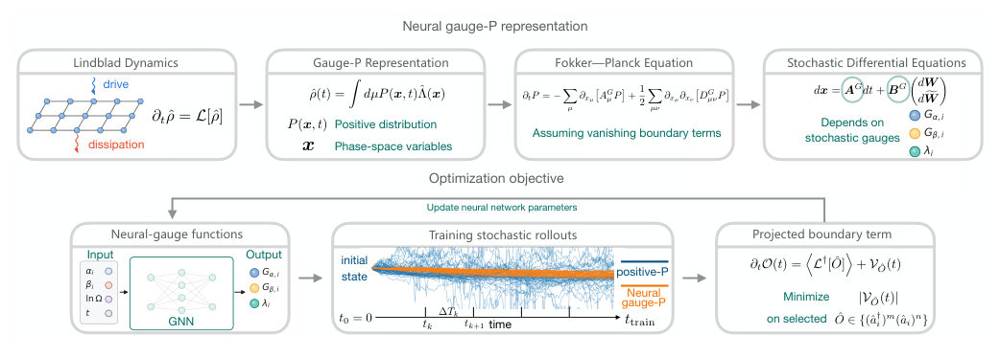
<figcaption class="paper-figure-caption"><b>Fig 1.</b> FIG. 1. Neural gauge-P representation. The gauge-P expansion maps the Lindblad equation to a Fokker–Planck equation when the boundary terms generated by integration by parts vanish. The corresponding SDEs contain drift and diffusion gauges. A graph neural network maps the phase-space variables α and β, the complex log weight ln Ω, and time t to the local drift gauges Gαi and Gβi and diffusion gauge λi. Training rollouts are scored by covariance-normalized residuals of exact moment equations, which probe selected projections of the boundary term. The residual loss is then used to update the network parameters.</figcaption>
</figure>
<figure class="paper-figure-card">
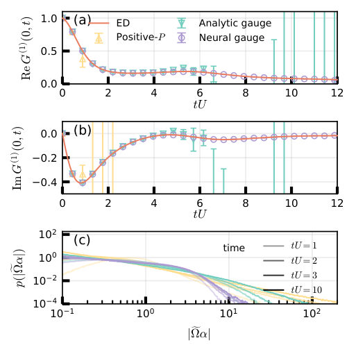
<figcaption class="paper-figure-caption"><b>Fig 2.</b> FIG. 2. Single-site Kerr dynamics for U = 1, γ = 0.3U, F = 0, ∆= 0, initialized with α(0) = β(0) = Ω(0) = 1. The neural gauges are trained up to ttrainU = 8 using a GNN with one message-passing layer and hidden dimension h = 256. For positive-P, gauge-P with the analytic gauge, and neural gauge-P, the observables are estimated from Nw = 106</figcaption>
</figure>
<figure class="paper-figure-card">
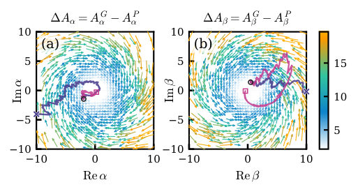
<figcaption class="paper-figure-caption"><b>Fig 3.</b> FIG. 4. Gauge-induced drift fields for the single-site Kerr system of Fig. 2 at tU = 3. Panels (a) and (b) show ∆Aα = AG α −AP α and ∆Aβ = AG β −AP β , respectively, projected onto the complex α and β planes. The arrow length and color indicate the local field magnitude. The blue and purple lines show trajectories generated by positive-P and neural gauge- P, respectively. Both trajectories start from the same initial condition and are propagated using the same Wiener-noise realization. The open circle marks the initial point, the open squares mark the final points, and the cross marks where the positive-P trajectory exits the displayed region.</figcaption>
</figure>
<figure class="paper-figure-card">
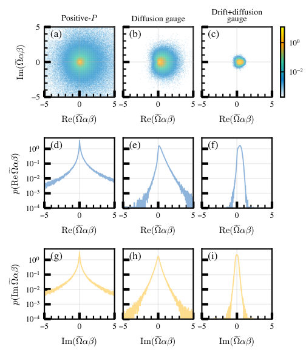
<figcaption class="paper-figure-caption"><b>Fig 4.</b> FIG. 3. Empirical distributions of the weighted occupation estimator eΩαβ, estimated from stochastic trajectories at tU = 3 for the undriven single-site system of Fig. 2. Panels (a)–(c) show the joint empirical distributions in the complex plane for positive-P, neural gauge-P with only the learned diffusion gauge retained, and full neural gauge-P with both learned drift and diffusion gauges, respectively. Panels (d)–(f) and (g)–(i) show the corresponding marginal distributions of the real and imaginary parts, respectively.</figcaption>
</figure>
<figure class="paper-figure-card">
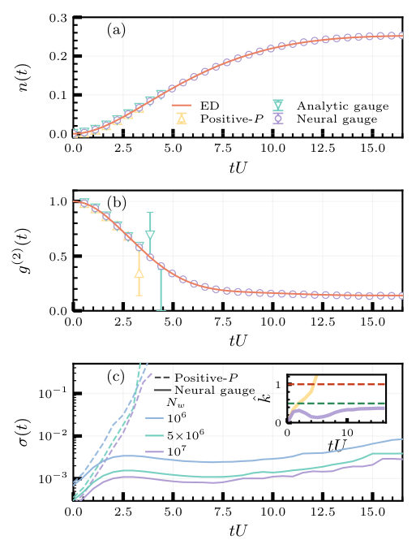
<figcaption class="paper-figure-caption"><b>Fig 5.</b> FIG. 5. Coherently driven single-site dynamics for U = 1, γ = 0.3U, ∆= 0, and F = 0.1U, initialized in the vacuum state. The neural gauges are trained up to Uttrain = 12 using a GNN with one message-passing layer and hidden dimension h = 256. Panels (a) and (b) show n(t) and g(2)(t), respectively, obtained from exact diagonalization (red solid line), positive-P (yellow upward triangles), gauge-P with the analytic gauge (green downward triangles), and neural gauge- P (purple circles). The stochastic estimates use Nw = 107</figcaption>
</figure>
</div>

<p><strong>Summary.</strong> The paper introduces the neural gauge-P representation, an advanced technique for simulating open quantum systems like interacting bosons. By using Graph Neural Networks trained on moment equation residuals, it enforces mathematical consistency that allows simulations to remain accurate during long-time evolution toward steady states. This overcomes limitations faced by traditional phase-space methods.</p>
<p><strong>Why it may be interesting.</strong> This work directly addresses a major computational bottleneck in open quantum dynamics by integrating machine learning (GNNs) into established theoretical frameworks (Gauge-P representation) to ensure numerical consistency over extended time scales.</p>
<details>
<summary>Detailed structure</summary>
<p><strong>Main problem.</strong> Simulating the nonequilibrium dynamics of interacting open quantum systems remains challenging beyond small system sizes due to limitations in standard phase-space representations.</p>
<p><strong>Main result.</strong> The proposed neural gauge-P representation maintains accuracy during long-time evolution toward steady states for the Bose-Hubbard model, significantly outperforming ungauged methods.</p>
<p><strong>Method.</strong> It introduces a novel framework that parameterizes stochastic gauges using Neural Networks (GNN) and optimizes these parameters by minimizing residuals derived from exact moment equations.</p>
<p><strong>Model / system.</strong> The study focuses on interacting open bosonic systems, specifically modeling the driven-dissipative Bose–Hubbard model on both single sites and square lattices. The dynamics are governed by a Lindblad master equation.</p>
<p><strong>Key observables.</strong> Lattice-averaged density n(t) and normalized local second-order correlation g^(2)(t).</p>
<p><strong>Important parameters / regimes.</strong> The Hamiltonian includes hopping (J), on-site interaction (U), and external driving/dissipation terms (F, F*). The optimization involves minimizing residuals related to projected boundary terms.</p>
<p><strong>Assumptions / limitations.</strong> The method relies on projecting the challenging operator-valued boundary term onto a selected set of normally ordered monomial operators, under the assumption that these projections are sufficient for accurate simulation.</p>
<p><strong>Figures summary.</strong> Figures illustrate the workflow involving gauge expansion, Fokker-Planck equations, and SDEs trained using moment equation residuals. Results show comparisons of observables like n(t) and g^(2)(t) across different methods (Positive-P vs. Neural Gauge-P).</p>
<p><strong>Paper structure.</strong> The paper introduces the limitations of existing phase-space methods, details the construction of the neural gauge-P representation using GNNs trained on moment equation residuals, applies this to the Bose-Hubbard model, and presents comparative results showing long-time stability.</p>
</details>
<details>
<summary>Abstract</summary>
<p>Simulating the nonequilibrium dynamics of interacting open quantum systems remains challenging beyond small system sizes. Quantum phase-space representations provide a scalable approach, but their useful simulation time can be limited by broad distribution tails and the associated boundary terms. We introduce the neural gauge-$P$ representation for open bosonic systems, in which stochastic gauges are parameterized by neural networks and optimized using exact moment equation residuals. For the driven-dissipative Bose--Hubbard model in both single-site and square-lattice settings, the neural gauge-$P$ representation remains accurate during long-time evolution toward the steady state, whereas the corresponding ungauged representation becomes unreliable at substantially earlier times. These results demonstrate the potential of the neural gauge-$P$ representation for accurate simulations of nonequilibrium open quantum many-body dynamics.</p>
</details>
<p><sub><a href="#top">↑ back to top</a></sub></p>

<p><a id="paper-2607.17920"></a></p>
<h3 id="sensing-relativistic-quantum-fields-with-minimally-perturbing-local-measurements"><a href="http://arxiv.org/abs/2607.17920v1">Sensing relativistic quantum fields with minimally perturbing local measurements</a></h3>
<p><strong>Authors:</strong> F. Daem, L. Ballesteros Ferraz, A. Zampeli, A. Matzkin<br>
<strong>Type:</strong> theory · <strong>Category:</strong> other · <strong>PDF:</strong> <a href="https://arxiv.org/pdf/2607.17920v1">https://arxiv.org/pdf/2607.17920v1</a><br>
<strong>Analysis basis:</strong> full PDF text, analyzed in chunks
<strong>Topic relevance:</strong> 🔥 <code>quantum measurements</code> <strong>5/5</strong> · <code>measurement-induced transitions</code> <strong>3/5</strong> · <code>Keldysh / 2PI / non-Gaussian methods</code> <strong>1/5</strong> · <code>correlated / nonlocal dissipation</code> <strong>1/5</strong> · <code>entanglement &amp; information structure</code> <strong>1/5</strong> · <code>non-equilibrium dynamics</code> <strong>1/5</strong></p>
<div class="figure-strip-hint">↔ Scroll figures horizontally</div>
<div class="paper-figures-scroll">
<figure class="paper-figure-card">
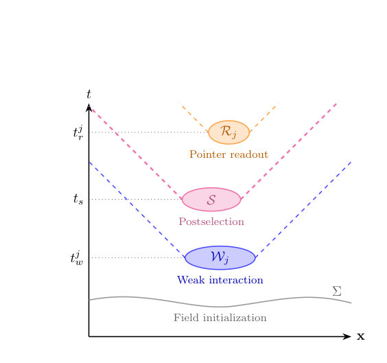
<figcaption class="paper-figure-caption"><b>Fig 1.</b> Figure 1. Spacetime geometry of the protocol. The quantum field state |ψ⟩is prepared on the initial hypersurface Σ. The weak interaction between the field and the jth pointer occurs in Wj around time tj w, postselection in S around ts, and the jth pointer readout in Rj around tj r.</figcaption>
</figure>
<figure class="paper-figure-card">
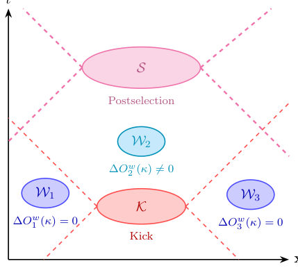
<figcaption class="paper-figure-caption"><b>Fig 2.</b> Figure 2. Non destructive causal mapping of a local change of the field. A kick in region K is probed by weakly coupled pointers in regions Wj. Our protocol shows, using the dif- ference ∆Ow j (κ) = Ow j (κ) −Ow j (κ = 0), that the shift of the jth pointer after postselection in S has no dependence on κ (∆Ow j (κ) = 0) if Wj (blue) is outside the lightcone of K, but is κ-dependent (∆Ow j (κ) ̸= 0) if Wj (cyan) is causally con- nected to K.</figcaption>
</figure>
<figure class="paper-figure-card">
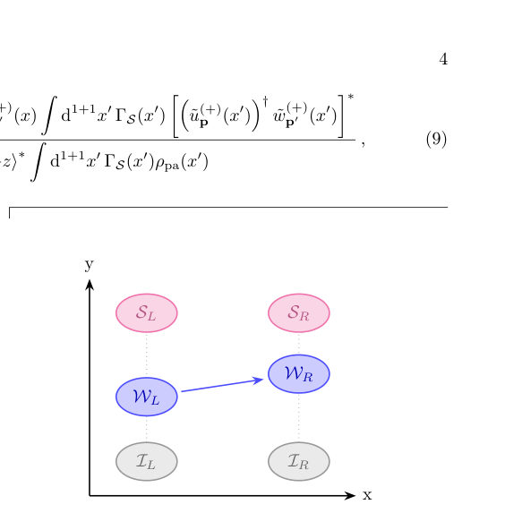
<figcaption class="paper-figure-caption"><b>Fig 3.</b> Figure 4. 2D spatial setup (x = (x, y)) for discriminating an entangled state from a classical mixture. A 2-particle field state (entangled or mixture) is prepared with a particle in region IL, another in region IR. In region WL, the field is weakly coupled to a pointer. The pointer is moved to region WR and coupled there to the field. Finally the field is posts- elected in regions SL and SR.</figcaption>
</figure>
<figure class="paper-figure-card">
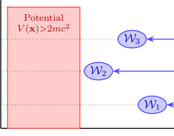
<figcaption class="paper-figure-caption"><b>Fig 4.</b> Figure 3. Schematics of non-destructive detection of the local particle density produced by a supercritical background field (V (x) &gt; 2mc2). The space-time diagram shows regions Wj where weak unitary couplings take place during a short time interval centered on tj w. The field is postselected in region S at time ts.</figcaption>
</figure>
</div>

<p><strong>Summary.</strong> This paper establishes a general theory for non-destructive measurements on relativistic quantum fields using weakly coupled pointers. By analyzing the resulting 'effective weak values,' the authors show that one can probe local quantities like particle density and test for entanglement by observing specific shifts in the measurement statistics. This framework is vital for developing quantum sensing protocols in high-energy or condensed matter contexts.</p>
<p><strong>Why it may be interesting.</strong> This work provides a rigorous theoretical toolset for quantum measurement in relativistic settings, which is crucial for understanding how local probes can extract information about fundamental field properties without destroying the system's coherence or violating causality.</p>
<details>
<summary>Detailed structure</summary>
<p><strong>Main problem.</strong> The paper develops a theoretical framework for performing minimally perturbing, non-destructive local measurements on relativistic quantum fields.</p>
<p><strong>Main result.</strong> It demonstrates that the measurement outcome (effective weak value) can probe local field properties like particle density or distinguish between entangled states and classical mixtures, while respecting causality constraints.</p>
<p><strong>Method.</strong> The approach uses weak unitary coupling to localized 'pointers' coupled to the field, followed by postselection defined by Kraus operators derived from relativistic measurement theory.</p>
<p><strong>Model / system.</strong> The system is a charged scalar quantum field in flat spacetime. The interactions are modeled via weak Hamiltonians involving local field observables ($\hat{O}_j(x)$) and pointer variables.</p>
<p><strong>Key observables.</strong> Effective weak values ($O_{W_j}$ or $\Omega_w^j$), particle-creation densities, and the difference in pointer shifts ($\Delta O_{W_j}(\kappa)$).</p>
<p><strong>Important parameters / regimes.</strong> Weak coupling strength ($\lambda$), causal structure (spacelike/timelike separation), and postselection conditions.</p>
<p><strong>Assumptions / limitations.</strong> The analysis heavily relies on the weak coupling approximation ($\lambda$ small) and the use of postselection to define the measured state.</p>
<p><strong>Figures summary.</strong> Figures illustrate the spacetime geometry of the measurement protocol, non-destructive causal mapping (showing zero shift outside the lightcone), and setups for particle density counting or entanglement discrimination.</p>
<p><strong>Paper structure.</strong> The paper builds from defining the general framework for weak coupling measurements to calculating effective weak values. It then applies this formalism sequentially to three distinct physical problems: causality testing, pair creation monitoring, and state discrimination.</p>
</details>
<details>
<summary>Abstract</summary>
<p>We develop a framework for minimally perturbing local measurements in relativistic quantum field theory, with the aim to sense local properties of the field in a non-destructive manner. The field properties are sensed by weakly coupled pointers and encapsulated in conditional expectation values dependent on a postselection of the field state. Our operational protocol uses causally admissible Kraus updates for the field, in line with recent relativistic measurement theories, keeping in mind restrictions related to ``impossible measurements''. We illustrate our approach with three applications: a spacelikeness detector for causal-structure sensing, counting particle-creation densities in a supercritical potential and non-destructive discrimination between entangled states of the field and mixtures.</p>
</details>
<p><sub><a href="#top">↑ back to top</a></sub></p>

<p><a id="paper-2607.17647"></a></p>
<h3 id="active-optical-frequency-measurements-with-superradiance-prolonged-by-a-modulated-magnetic-field"><a href="http://arxiv.org/abs/2607.17647v1">Active Optical Frequency Measurements with Superradiance Prolonged by a Modulated Magnetic Field</a></h3>
<p><strong>Authors:</strong> Huihui Yu, Shi-Lei Su, Chongxin Shan, Klaus Mølmer, Yuan Zhang<br>
<strong>Type:</strong> both · <strong>Category:</strong> other · <strong>PDF:</strong> <a href="https://arxiv.org/pdf/2607.17647v1">https://arxiv.org/pdf/2607.17647v1</a><br>
<strong>Analysis basis:</strong> full PDF text, analyzed in chunks
<strong>Topic relevance:</strong> 🔥 <code>Dicke superradiance</code> <strong>4/5</strong> · 🔥 <code>quantum optics experiment</code> <strong>4/5</strong> · 🔥 <code>superradiant laser</code> <strong>4/5</strong> · <code>Tavis-Cummings &amp; cavity-many-emitter</code> <strong>3/5</strong> · <code>analog quantum simulation</code> <strong>3/5</strong> · <code>correlated cavity matter</code> <strong>3/5</strong> · <code>driven-dissipative phase transition</code> <strong>3/5</strong> · <code>methods for driven-dissipative</code> <strong>3/5</strong> · <code>Keldysh / 2PI / non-Gaussian methods</code> <strong>2/5</strong> · <code>correlated / nonlocal dissipation</code> <strong>2/5</strong> · <code>non-equilibrium dynamics</code> <strong>2/5</strong> · <code>non-equilibrium universality</code> <strong>2/5</strong> · <code>entanglement &amp; information structure</code> <strong>1/5</strong> · <code>interference shaping light</code> <strong>1/5</strong> · <code>measurement-induced transitions</code> <strong>1/5</strong> · <code>quantum measurements</code> <strong>1/5</strong> · <code>spintronics-quantum-optics interface</code> <strong>1/5</strong></p>
<div class="figure-strip-hint">↔ Scroll figures horizontally</div>
<div class="paper-figures-scroll">
<figure class="paper-figure-card">
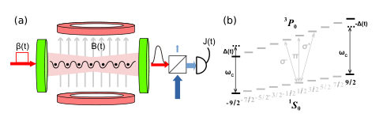
<figcaption class="paper-figure-caption"><b>Fig 1.</b> Figure 1. System schematic and energy level diagram. Panel (a) depicts optical lattice-trapped strontium-87 atoms, sub- ject to a magnetic field B (t), in an optical cavity field, driven by a laser pulse β(t). The emitted signal is mixed with a reference laser beam and detected by a photodetector, gen- erating the photocurrent J (t). Panel (b) shows the atomic energy diagram with ten hyperfine levels mF = −9/2, ..., 9/2 (gray lines) of the electronic ground state 1S0 and excited state 3P0, and σ+, π, σ−transitions between these levels with ∆mF = +1, 0, −1 (gray arrows). The black arrows show the nearly-resonant coupling of two atomic sub-ensembles in the extreme levels mF = −9/2, 9/2 to the...</figcaption>
</figure>
<figure class="paper-figure-card">
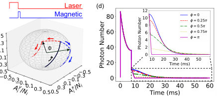
<figcaption class="paper-figure-caption"><b>Fig 2.</b> Figure 2. Magnetic field-controlled superradiance. Panel (a) shows the sequential application of a laser pulse and a mag- netic field (top), causing the rotation and subsequent preces- sion of the Bloch vectors A9/2,A−9/2 of the two atomic sub- ensembles (red dashed and blue solid curves). Panel (b) shows how the intra-cavity photon number decays after its transient excitation by the input pulse and then follows the oscillating coherent atomic dipole moment resulting from addition of the two Bloch vectors. Panel (c) illustrates the rotations of the two Bloch vectors subjected to the laser and magnetic field pulses shown at the top of the panel. Panel (d) shows the monotonous decay of the...</figcaption>
</figure>
<figure class="paper-figure-card">
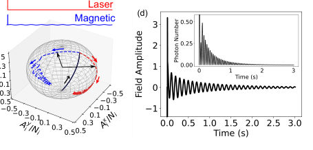
<figcaption class="paper-figure-caption"><b>Fig 3.</b> Figure 3. Superradiance engineered by a train of short mag- netic pulses (a,b) and by a sinusoidal modulation of the mag- netic field (c,d). The corresponding frequency detuning ∆(t) has an amplitude of 2π × 100 Hz and a period of 0.63 ms for the pulses shown at the top of panel (a), and an amplitude 2π×2.5 Hz and a period 0.1 s for the modulation shwon at the top of panel (b). Panels (a,c) show the dynamics of the sub- ensemble Bloch vectors and panels (b,d) show the dynamics of the intra-cavity field amplitude and photon number (insets).</figcaption>
</figure>
<figure class="paper-figure-card">
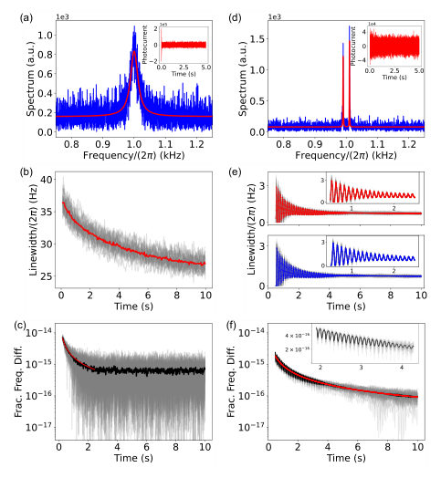
<figcaption class="paper-figure-caption"><b>Fig 4.</b> Figure 4. Active optical frequency measurements with short (a,b,c) and prolonged (d,e,f) superradiant pulses as shown in Fig. 2 (d) and Fig. 3(d). Panels (a) and (d) show the power spectra (blue), obtained by Fourier transform of τ = 5 s long simulated noisy photocurrents (insets), and correspond- ing Lorentzian fits (red curves). Panels (b) and (e) show the dependence of the extracted linewidth on the duration of the measurement, where the colored and gray curves show the mean and the overlap of 30 simulations respectively. In panel (e), the upper and lower part show the results for the left and right frequency peaks shown in panel (d). Panels (c) and (f) show the mean (black curves) of...</figcaption>
</figure>
</div>

<p><strong>Summary.</strong> The paper demonstrates how modulating an external magnetic field can actively control superradiant emission from an atom-cavity system, transforming rapid pulses into sustained or periodic trains. This engineered coherence leads to dramatically narrower spectral features when measured via heterodyne detection. The result shows a significant enhancement in the precision of optical frequency measurements.</p>
<p><strong>Why it may be interesting.</strong> This work directly addresses quantum control in cavity QED systems by using external fields (magnetic) to manipulate collective atomic emission dynamics, which is a core topic in AMO physics and quantum optics.</p>
<details>
<summary>Detailed structure</summary>
<p><strong>Main problem.</strong> The goal is to actively control the release of superradiant excitation energy, which is normally rapid and spectrally broad, by modulating atomic transition frequencies using a magnetic field.</p>
<p><strong>Main result.</strong> Modulating the magnetic field allows for the prolongation of superradiant pulses or generating pulse trains, leading to significantly sharper spectral features and substantially reduced frequency uncertainty in heterodyne detection.</p>
<p><strong>Method.</strong> The study uses theoretical modeling based on the stochastic master equation solved via cumulant mean-field approaches, supplemented by numerical simulations.</p>
<p><strong>Model / system.</strong> The system involves superradiant emission from a long-lived excited state of an atomic ensemble (Sr-87) confined within an optical cavity. The dynamics are controlled by applying time-dependent magnetic fields that induce Zeeman shifts on the atomic transitions.</p>
<p><strong>Key observables.</strong> Superradiant emission intensity, intra-cavity photon number, Bloch vectors ($\mathbf{A}_{9/2}, \mathbf{A}_{-9/2}$), and frequency uncertainty quantified via Fractional Frequency Difference (FFD).</p>
<p><strong>Important parameters / regimes.</strong> Cavity frequency ($\omega_c$), damping rate ($\kappa$), coupling strength ($g$), and the time-dependent magnetic field modulation $\mathbf{B}(t)$.</p>
<p><strong>Assumptions / limitations.</strong> The analysis relies on stochastic master equations solved using cumulant mean-field approximations, which are necessary to incorporate measurement backaction from heterodyne detection.</p>
<p><strong>Figures summary.</strong> Figures illustrate system schematics, Bloch vector rotations under magnetic control, and power spectra comparing short vs. prolonged superradiance pulses, demonstrating linewidth narrowing.</p>
<p><strong>Paper structure.</strong> The paper develops the theoretical framework using stochastic master equations, details the application of cumulant mean-field approximations for heterodyne detection, simulates the effect of time-dependent magnetic fields to engineer pulse trains, and quantifies the resulting improvement in frequency measurement precision.</p>
</details>
<details>
<summary>Abstract</summary>
<p>Superradiant emission from long-lived excited states of an atomic ensemble confined in an optical cavity constitutes a practical source of light with narrow linewidth. In the pulsed regime, however, superradiance implies rapid emission and a broadening of the spectrum. Recent experiments have demonstrated constructive and destructive interference of superradiant emission by different strontium atomic transitions. In this article, we show that by modulating the atomic transition frequencies with a magnetic field, it is possible to control the release of the atomic excitation energy as a prolonged pulse or a train of superradiant pulses. By simulations, we show that heterodyne detection of the prolonged superradiance shows extremely sharp spectral features, which leads to significantly reduced frequency uncertainty and fluctuation.</p>
</details>
<p><sub><a href="#top">↑ back to top</a></sub></p>

<p><a id="paper-2607.17934"></a></p>
<h3 id="variational-non-gaussian-approach-to-interacting-spin-boson-models"><a href="http://arxiv.org/abs/2607.17934v1">Variational non-gaussian approach to interacting spin-boson models</a></h3>
<p><strong>Authors:</strong> João Pedro Mendonça, Yao Wang, Krzysztof Jachymski<br>
<strong>Type:</strong> theory · <strong>Category:</strong> other · <strong>PDF:</strong> <a href="https://arxiv.org/pdf/2607.17934v1">https://arxiv.org/pdf/2607.17934v1</a><br>
<strong>Analysis basis:</strong> full PDF text, analyzed in chunks
<strong>Topic relevance:</strong> 🔥 <code>Keldysh / 2PI / non-Gaussian methods</code> <strong>4/5</strong> · 🔥 <code>analog quantum simulation</code> <strong>4/5</strong> · 🔥 <code>methods for driven-dissipative</code> <strong>4/5</strong> · <code>Dicke superradiance</code> <strong>3/5</strong> · <code>Tavis-Cummings &amp; cavity-many-emitter</code> <strong>3/5</strong> · <code>correlated cavity matter</code> <strong>3/5</strong> · <code>exotic spin models in light-matter</code> <strong>3/5</strong> · <code>spintronics-quantum-optics interface</code> <strong>3/5</strong> · <code>superradiant laser</code> <strong>2/5</strong> · <code>correlated / nonlocal dissipation</code> <strong>1/5</strong> · <code>driven-dissipative phase transition</code> <strong>1/5</strong> · <code>entanglement &amp; information structure</code> <strong>1/5</strong> · <code>non-equilibrium dynamics</code> <strong>1/5</strong></p>
<div class="figure-strip-hint">↔ Scroll figures horizontally</div>
<div class="paper-figures-scroll">
<figure class="paper-figure-card">
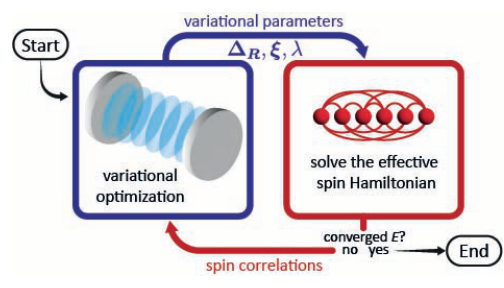
<figcaption class="paper-figure-caption"><b>Fig 1.</b> FIG. 1. Self-consistent optimization loop. For fixed bosonic variational parameters, the effective spin Hamiltonian is solved (DMRG), yielding spin expectation values and corre- lations that update the variational energy functional. The procedure is iterated until convergence of the energy and se- lected observables.</figcaption>
</figure>
<figure class="paper-figure-card">
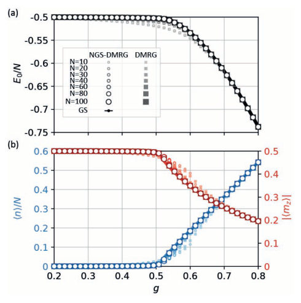
<figcaption class="paper-figure-caption"><b>Fig 2.</b> FIG. 2. Dicke model observables for the three solvers and various N. (a) Average energy, (b) photon number per spin and absolute magnetization as a function of g. Marker sizes scale proportionally with the N. For reference DMRG, we fix nmax = 40, 40, 60, 60, 80, 100, and 140 for N = 10, 20, 30, 40, 60, 80, and 100, respectively.</figcaption>
</figure>
<figure class="paper-figure-card">
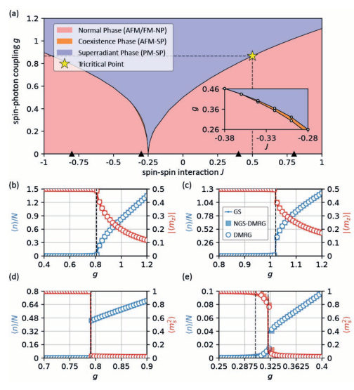
<figcaption class="paper-figure-caption"><b>Fig 3.</b> FIG. 3. Dicke-Ising model phase diagram and observables. (a) Phase diagram in the Gaussian limit as a function of the spin-spin interaction J and spin-photon coupling g, depicting first- and second-order phase boundaries alongside a tricrit- ical point. The mapped regions include the normal phases (AFM/FM-NP), the superradiant phase (PM-SP), and a co- existence phase (AFM-SP) detailed in the inset. (b)-(e) Sys- tem observables evaluated along vertical cuts at fixed N = 100 for representative J values, indicated by triangles in (a). The panels correspond to (b) J = 0.4, (c) J = 0.8, (d) J = −0.8, and (e) J = −0.3. Results from the three solvers are shown for comparison in each panel....</figcaption>
</figure>
<figure class="paper-figure-card">
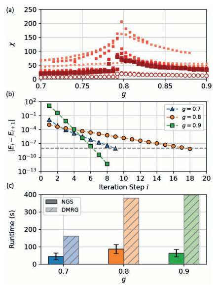
<figcaption class="paper-figure-caption"><b>Fig 4.</b> FIG. 5. Computational cost comparison for the Dicke-Ising model for J = −0.8. (a) Maximum MPS bond dimension χ as a function of g for the NGS-DMRG (circles) and refer- ence DMRG (squares) across distinct N. Marker sizes scale proportionally with N. (b) Energy difference per iteration step i demonstrating exponentially fast convergence of the self-consistent NGS loop for N = 100 and selected values of g. (c) Total execution runtime comparing the NGS-DMRG and reference DMRG solvers for N = 100 and selected values of g. For the reference DMRG baseline, the photon cutoff nmax is chosen according to the number of atoms as nmax = 30, 60, 80, 160, 160, 300, and 350 for N = 10, 20, 30, 40, 60, 80,...</figcaption>
</figure>
<figure class="paper-figure-card">
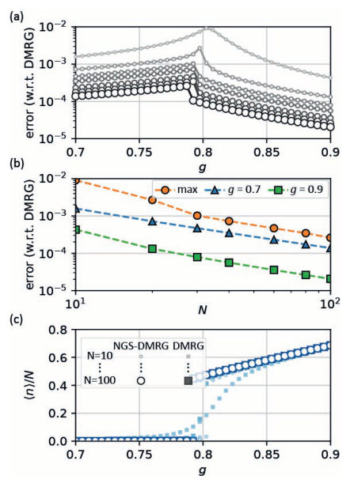
<figcaption class="paper-figure-caption"><b>Fig 5.</b> FIG. 4. Accuracy of the NGS-DMRG approach for the Dicke- Ising model for J = −0.8 and various N. (a) Ground-state energy error relative to the reference DMRG solution as a function of the spin-photon coupling g. (b) Energy error eval- uated at selected coupling strengths as a function of N. (c) Photon number per spin ⟨n⟩/N versus g for both NGS-DMRG (circles) and reference DMRG (squares). Marker sizes scale proportionally with the N. For the reference DMRG base- line, the photon cutoff nmax is chosen according to the num- ber of atoms as nmax = 30, 60, 80, 160, 160, 300, and 350 for N = 10, 20, 30, 40, 60, 80, and 100, respectively.</figcaption>
</figure>
</div>

<p><strong>Summary.</strong> The paper introduces a novel variational non-Gaussian approach to simulate complex interacting spin-boson models. It systematically captures strong quantum correlations by parameterizing the bosonic and spin sectors within a compact manifold. This method is validated against established DMRG techniques for systems like the Dicke model, offering an accurate alternative for strongly correlated light-matter interactions.</p>
<p><strong>Why it may be interesting.</strong> This work directly addresses key challenges in quantum optics and AMO physics by providing a systematic, variational tool to handle strong correlations in light-matter coupling regimes where mean-field or simple truncation methods fail.</p>
<details>
<summary>Detailed structure</summary>
<p><strong>Main problem.</strong> The primary goal is developing a robust simulation method for interacting spin-boson systems that are challenging due to unbounded bosonic Hilbert spaces and strong many-body correlations.</p>
<p><strong>Main result.</strong> The proposed variational non-Gaussian approach yields accurate ground-state solutions for benchmark models like the Dicke model, often with reduced computational cost compared to standard DMRG methods.</p>
<p><strong>Method.</strong> A hybrid variational framework is employed that maps the bosonic and spin-boson correlations onto a compact non-Gaussian variational manifold. Minimization involves an iterative loop where the effective spin Hamiltonian is solved using DMRG.</p>
<p><strong>Model / system.</strong> The study focuses on general interacting spin-boson Hamiltonians, including specific examples like the Dicke model and the Dicke-Ising model, which describe light-matter coupled quantum systems (e.g., cavity QED).</p>
<p><strong>Key observables.</strong> Ground-state energy, photon number expectation value ($\langle n 
angle$), spin magnetization ($\langle S_z 
angle$), and comparison of bond dimensions.</p>
<p><strong>Important parameters / regimes.</strong> Coupling strengths ($g$, $J$), bosonic frequencies ($\omega$), and the variational parameters defining the non-Gaussian state ($\Delta R, \Gamma, \lambda$).</p>
<p><strong>Assumptions / limitations.</strong> The method assumes the ground state can be accurately represented within the constructed non-Gaussian variational manifold. It avoids eliminating or truncating the photonic field explicitly.</p>
<p><strong>Figures summary.</strong> Figures illustrate the self-consistent optimization loop involving fixing bosonic parameters, solving the effective spin Hamiltonian via DMRG, and updating the energy functional using variational parameters.</p>
<p><strong>Paper structure.</strong> The paper details the construction of the non-Gaussian state ansatz using a unitary dressing transformation ($U_\lambda$), deriving an effective spin Hamiltonian ($\hat{H}_{	ext{eff}}$), and outlining the self-consistent minimization procedure involving DMRG solutions for the spin sector.</p>
</details>
<details>
<summary>Abstract</summary>
<p>We apply a hybrid variational framework to interacting spin-boson Hamiltonians, targeting regimes where simulations are limited by the unbounded bosonic Hilbert space and strong many-body correlations. The bosonic sector and spin-boson correlations are captured within a compact non-Gaussian variational manifold, while the minimized spin sector is obtained as the solution to an effective spin Hamiltonian. Minimization is carried out inside a self-consistent energy-minimization loop, where variational parameters are minimized and the effective Hamiltonian is solved via DMRG. The results are obtained without eliminating or truncating the photonic field. We benchmark the method on the Dicke and Dicke-Ising models by comparison to converged spin-boson DMRG, finding accurate ground-state solutions with reduced bond dimension.</p>
</details>
<p><sub><a href="#top">↑ back to top</a></sub></p>

<p><a id="paper-2607.17320"></a></p>
<h3 id="scaling-law-for-optimal-excitation-storage-and-superradiant-release-in-waveguide-qed-systems"><a href="http://arxiv.org/abs/2607.17320v1">Scaling law for optimal excitation storage and superradiant release in waveguide QED systems</a></h3>
<p><strong>Authors:</strong> Wei Chen, Kuan-Ting Lin, Guin-Dar Lin, Hsiang-Hua Jen<br>
<strong>Type:</strong> theory · <strong>Category:</strong> other · <strong>PDF:</strong> <a href="https://arxiv.org/pdf/2607.17320v1">https://arxiv.org/pdf/2607.17320v1</a><br>
<strong>Analysis basis:</strong> full PDF text, analyzed in chunks
<strong>Topic relevance:</strong> 🔥 <code>Tavis-Cummings &amp; cavity-many-emitter</code> <strong>4/5</strong> · 🔥 <code>methods for driven-dissipative</code> <strong>4/5</strong> · <code>analog quantum simulation</code> <strong>3/5</strong> · <code>correlated / nonlocal dissipation</code> <strong>3/5</strong> · <code>correlated cavity matter</code> <strong>3/5</strong> · <code>driven-dissipative phase transition</code> <strong>3/5</strong> · <code>non-equilibrium dynamics</code> <strong>3/5</strong> · <code>Dicke superradiance</code> <strong>2/5</strong> · <code>non-equilibrium universality</code> <strong>2/5</strong> · <code>superradiant laser</code> <strong>2/5</strong> · <code>Keldysh / 2PI / non-Gaussian methods</code> <strong>1/5</strong> · <code>entanglement &amp; information structure</code> <strong>1/5</strong> · <code>exotic spin models in light-matter</code> <strong>1/5</strong></p>
<div class="figure-strip-hint">↔ Scroll figures horizontally</div>
<div class="paper-figures-scroll">
<figure class="paper-figure-card">
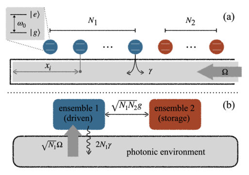
<figcaption class="paper-figure-caption"><b>Fig 1.</b> FIG. 1. Schematic of the system setup. (a) Two emitter arrays, driven and storage ensemble, consisting of N1 and N2 emitters, in- teracting via an infinite-range DDI mediated by a 1D semi-infinite waveguide (with individual emitter decay rate of γ). Each emitter is a two-level system with ground state |g⟩, excited state |e⟩, and tran- sition frequency ω0. The distance of the i-th emitter from the closed end of the waveguide is xi. Additionally, the system is driven by a coherent waveguide field from the open end with driving strength of Ω. (b) In the case of Eq. (3), the system turns into two coupled col- lective spin, ensemble 1 (driven) and 2 (storage). Driven ensemble is...</figcaption>
</figure>
<figure class="paper-figure-card">
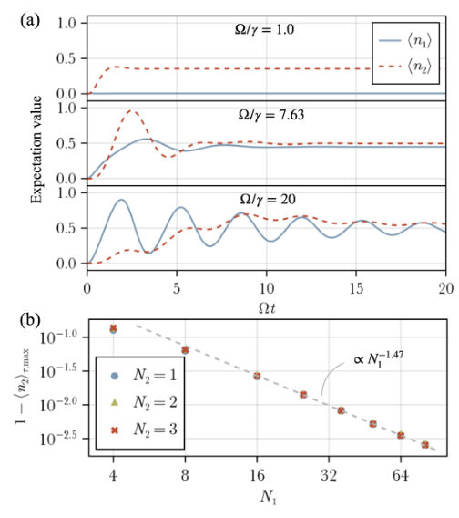
<figcaption class="paper-figure-caption"><b>Fig 2.</b> FIG. 2. Time evolution and scaling law of the excitation number in storage ensemble.. (a) Time evolution of the excitation number ⟨n2⟩for a system with (N1, N2) = (12, 1) at Ω/γ = 1.0, 7.63, and 20, shown from top to bottom. (b) Deviation of the maximum excitation number from unity, 1−⟨n2⟩τ,max, as a function of N1 for different system sizes (N1, N2). We simulate N2 = 1, 2, and 3, and find that the results converge in the limit N1 ≫N2.</figcaption>
</figure>
<figure class="paper-figure-card">
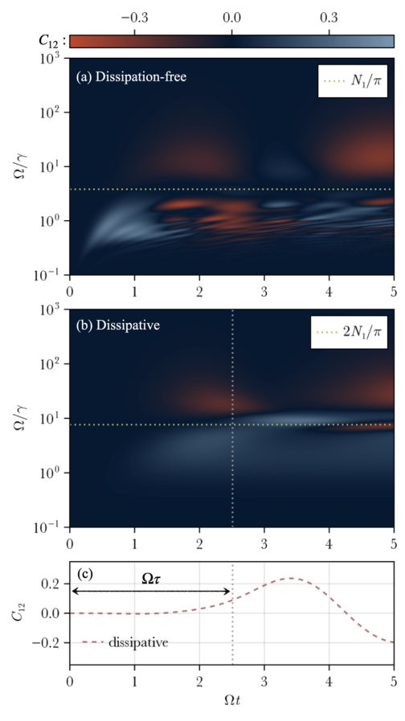
<figcaption class="paper-figure-caption"><b>Fig 3.</b> FIG. 3. Time evolution of the inter-ensemble correlator in dif- ferent coupling regimes. We calculate the connected correlator C12 from the density matrix obtained from Eq. (4). Panels (a) ex- clude the dissipative contribution, whereas panel (b) shows the dy- namics including the effect of the dissipator. The system size is (N1, N2) = (12, 1) in both panels. The yellow dotted line in (a) in- dicates the transition point separating different coupling regime and the one in (b) marks the optimal ratio (Ω/γ)max. By comparing (a) and (b), we further show that the dissipator induces inter-ensemble mixing and leads to the accumulation of correlations during the time evolution. (c) Time evolution...</figcaption>
</figure>
<figure class="paper-figure-card">
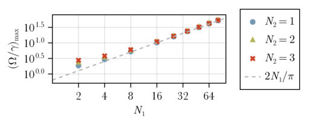
<figcaption class="paper-figure-caption"><b>Fig 4.</b> FIG. 4. Scaling law of the optimal ratio (Ω/γ)max. By numeri- cally simulating the system dynamics according to Eq. (4), we ex- tract the optimal ratio between the coupling strength γ and the driv- ing strength Ω. The numerical results are compared with the scaling relation in Eq. (9), showing good agreement in the regime N1 ≫N2.</figcaption>
</figure>
<figure class="paper-figure-card">
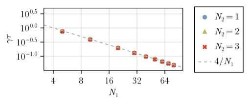
<figcaption class="paper-figure-caption"><b>Fig 5.</b> FIG. 6. Optimal driving duration τ. For the case of N1 ≫N2 the optimal driving duration scales ∼4/N1 (dashed gray line) with the emitter number in driven ensemble.</figcaption>
</figure>
</div>

<p><strong>Summary.</strong> This paper develops a theoretical framework to control excitation storage and release in coupled emitter arrays embedded in waveguides. By analyzing the system's master equation, the authors derive a simple scaling law showing optimal transfer occurs when one ensemble is much larger than the other. This leads to a proposed three-stage protocol for programmable quantum energy management.</p>
<p><strong>Why it may be interesting.</strong> This work directly addresses controllable energy management in open quantum systems using waveguide QED, providing quantitative scaling laws that simplify complex many-body dynamics into predictable protocols for quantum memory and energy harvesting.</p>
<details>
<summary>Detailed structure</summary>
<p><strong>Main problem.</strong> The study aims to develop controllable mechanisms for storing and releasing quantum excitations using driven-dissipative emitter ensembles, overcoming challenges posed by complex interplay between driving, dissipation, and correlations.</p>
<p><strong>Main result.</strong> The authors uncover a simple scaling law showing that optimal excitation transfer occurs when the size of the driven ensemble ($N_1$) greatly exceeds the storage ensemble ($N_2$), allowing for a three-stage protocol for energy management.</p>
<p><strong>Method.</strong> The analysis involves deriving and solving a Markovian master equation governing the collective spin dynamics, utilizing mean-field approximations in specific limits to simplify the many-body problem.</p>
<p><strong>Model / system.</strong> The system consists of two spatially separated ensembles of quantum emitters coupled to a semi-infinite waveguide. The dynamics are modeled by an effective Hamiltonian and master equation describing coherent driving, dissipation, and inter-ensemble coupling.</p>
<p><strong>Key observables.</strong> Time evolution of excitation number ($\langle n_2 
angle$) in the storage ensemble; optimal transfer efficiency $\langle n_2 
angle_{	au, 	ext{max}}$.</p>
<p><strong>Important parameters / regimes.</strong> System size ratio ($N_1/N_2$), driving strength ($\Omega/\gamma$), and detuning ($\delta$). The limit $N_1 \gg N_2$ is crucial.</p>
<p><strong>Assumptions / limitations.</strong> The analysis relies on identifying a nearly uncorrelated transfer regime when the driven ensemble size greatly exceeds the storage ensemble size, enabling a mean-field description.</p>
<p><strong>Figures summary.</strong> Figure 2 illustrates the time evolution of excitation number $\langle n_2 
angle$ for varying $N_1$, confirming that results converge in the limit where the driven ensemble is much larger than the storage ensemble ($N_1 \gg N_2$).</p>
<p><strong>Paper structure.</strong> The paper establishes the physical model via a master equation, analyzes the dynamics by examining correlation regimes (dissipation-free vs. dissipative), derives scaling laws for optimal transfer, and concludes with a proposal for a three-stage storage-and-release protocol.</p>
</details>
<details>
<summary>Abstract</summary>
<p>Driven-dissipative quantum emitters provide a powerful platform for controllable excitation storage and release, with promising applications in quantum batteries and quantum storage. Yet, transient excitation transfer in collective many-body systems is often obscured by the intricate interplay among coherent driving, dissipation, and correlation dynamics. Here, we uncover a scalable excitation-storage mechanism in two emitter ensembles coupled to a semi-infinite waveguide. A coherently driven ensemble acts as an effective excitation reservoir, while a second ensemble positioned near a dissipative node serves as a subradiant storage medium. Surprisingly, when the driven ensemble largely exceeds the storage ensemble in size, the transfer dynamics enters a nearly correlation-free regime, allowing the driven ensemble to behave effectively as a classical excitation source. This reveals a simple scaling law for optimal excitation transfer, under which the storage ensemble approaches near-complete population inversion as the driven ensemble size increases. Building on this mechanism, we propose a three-stage storage-and-release protocol enabling fast excitation storage and controllable photon emission. Our results demonstrate how coherent and dissipative collective interactions can be jointly harnessed for quantum energy storage and programmable nonequilibrium dynamics in waveguide QED platforms.</p>
</details>
<p><sub><a href="#top">↑ back to top</a></sub></p>

<p><a id="paper-2607.16391"></a></p>
<h3 id="dissipative-stabilization-of-floquet-engineered-many-body-order"><a href="http://arxiv.org/abs/2607.16391v1">Dissipative Stabilization of Floquet-Engineered Many-Body Order</a></h3>
<p><strong>Authors:</strong> Shreyas Raman, Robin Schafer, Alicia J. Kollar, Anushya Chandran<br>
<strong>Type:</strong> theory · <strong>Category:</strong> statistical mechanics · <strong>PDF:</strong> <a href="https://arxiv.org/pdf/2607.16391v1">https://arxiv.org/pdf/2607.16391v1</a><br>
<strong>Analysis basis:</strong> full PDF text, analyzed in chunks
<strong>Topic relevance:</strong> 🔥 <code>analog quantum simulation</code> <strong>4/5</strong> · 🔥 <code>driven-dissipative phase transition</code> <strong>4/5</strong> · 🔥 <code>methods for driven-dissipative</code> <strong>4/5</strong> · 🔥 <code>non-equilibrium dynamics</code> <strong>4/5</strong> · <code>correlated / nonlocal dissipation</code> <strong>3/5</strong> · <code>exotic spin models in light-matter</code> <strong>3/5</strong> · <code>non-equilibrium universality</code> <strong>3/5</strong> · <code>Keldysh / 2PI / non-Gaussian methods</code> <strong>2/5</strong> · <code>entanglement &amp; information structure</code> <strong>1/5</strong> · <code>scars &amp; prethermalization</code> <strong>1/5</strong></p>
<div class="figure-strip-hint">↔ Scroll figures horizontally</div>
<div class="paper-figures-scroll">
<figure class="paper-figure-card">
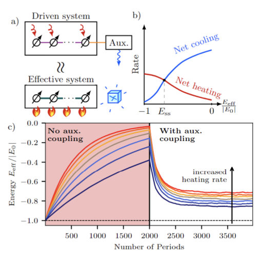
<figcaption class="paper-figure-caption"><b>Fig 1.</b> FIG. 1. (a) A driven system coupled to a dissipative auxil- iary maps to an effective static system subject to heating and cooling processes. (b) The steady-state effective energy Ess is set by the balance between net heating and net cooling rates. (c) Normalized effective energy Eeff/|E0| for the driven Ising chain in Eq. 5 with period-jitter noise and L = 18. The sys- tem starts in the ground state of Heff with energy E0, and the auxiliary coupling is switched on after 2000 periods. Without the auxiliary, the system heats toward infinite temperature; with the auxiliary, the system relaxes to a low-energy steady state, whose energy varies with the heating rate.</figcaption>
</figure>
<figure class="paper-figure-card">
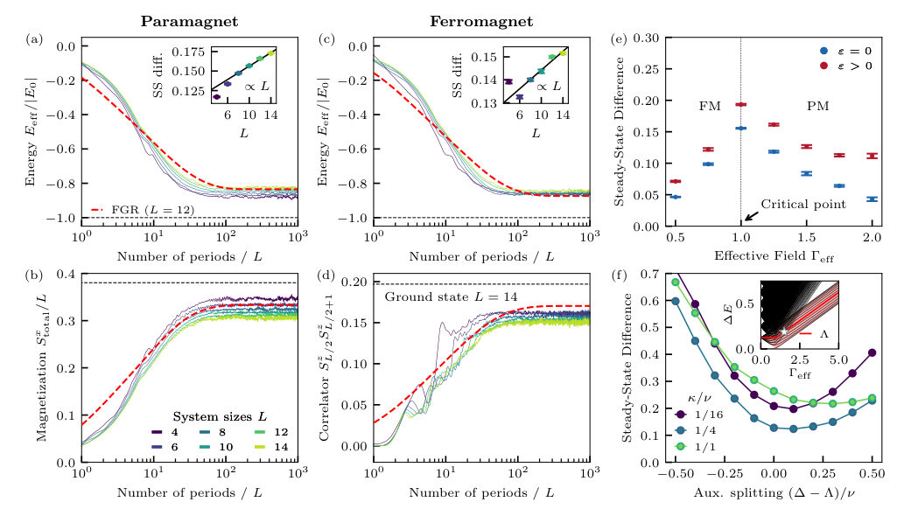
<figcaption class="paper-figure-caption"><b>Fig 2.</b> FIG. 2. Cooling into low-energy states of a Floquet-engineered transverse-field Ising chain using a single auxiliary coupled at one end. (a),(b) Paramagnetic (Γeff = 1.5) and (c),(d) ferromagnetic (Γeff = 0.75) regimes, starting from the infinite- temperature state, versus rescaled time. (a),(c) Normalized effective energy; red dashed curves show the FGR rate-equation prediction [Eq. 2]; black dotted lines mark ground-state values. Insets: steady-state energy difference Ess−E0</figcaption>
</figure>
<figure class="paper-figure-card">
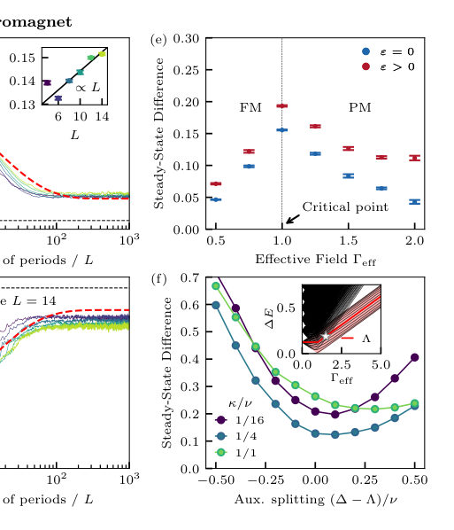
<figcaption class="paper-figure-caption"><b>Fig 3.</b> Fig. 2 demonstrates cooling across the effective Ising phase diagram, shows quantitative agreement with the</figcaption>
</figure>
<figure class="paper-figure-card">
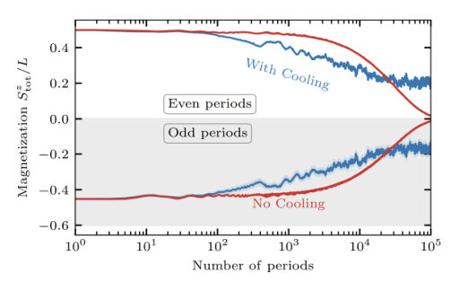
<figcaption class="paper-figure-caption"><b>Fig 4.</b> FIG. 3. Steady-state stabilization of a discrete time crys- tal. The stroboscopic z-magnetization is plotted for even and odd periods starting from the fully polarized state. At early times, Sz tot(t + T) ≃−Sz tot(t). Without the auxiliary (red), the period-doubled response dies out at late times. With the auxiliary (blue), it survives in the steady state. Parameters: L = 12, ω = 16, B/J = 2.256, ϵ = 0.1, ∆= 0.5, g = 0.5, κ = 0.125.</figcaption>
</figure>
</div>

<p><strong>Summary.</strong> The paper addresses the challenge of stabilizing exotic quantum orders created by periodic driving (Floquet engineering) against intrinsic energy heating. By coupling the system to controlled dissipative baths, the authors demonstrate that they can actively cool the system into a stable non-equilibrium steady state. This provides a powerful theoretical tool for realizing and controlling complex many-body physics in open quantum systems.</p>
<p><strong>Why it may be interesting.</strong> This work provides an analytical handle on achieving stable non-equilibrium states in open quantum systems, which is crucial for understanding engineered quantum matter beyond simple thermal equilibrium assumptions.</p>
<details>
<summary>Detailed structure</summary>
<p><strong>Main problem.</strong> To stabilize non-equilibrium quantum orders, such as those generated by Floquet driving, which are otherwise transient due to intrinsic energy heating in isolated systems.</p>
<p><strong>Main result.</strong> The coupling of the system to dissipative auxiliaries successfully cools the system toward a stable, non-equilibrium steady state, robustly stabilizing exotic orders like discrete time crystals.</p>
<p><strong>Method.</strong> The analysis employs rate theory derived from Fermi's Golden Rule (FGR) to model the balance between intrinsic heating and engineered cooling rates in the Lindblad master equation framework.</p>
<p><strong>Model / system.</strong> The system is a many-body spin chain (e.g., Ising chain) subjected to periodic Floquet driving, coupled to stochastically dissipative auxiliaries acting as a narrow-band cold bath.</p>
<p><strong>Key observables.</strong> Steady-state energy difference ($  ext{E}_{    ext{ss}} -  ext{E}_0$), transverse magnetization, and nearest-neighbor Ising correlator, used to diagnose cooling and order stabilization.</p>
<p><strong>Important parameters / regimes.</strong> High drive frequency ($\omega$), weak coupling ($g$), auxiliary splitting ($\Delta$), and noise/jitter strength ($\epsilon$).</p>
<p><strong>Assumptions / limitations.</strong> The analysis relies on perturbative expansions (e.g., Schrieffer-Wolff) and assumes the system operates in a regime where quasiparticle density is low.</p>
<p><strong>Figures summary.</strong> Figures illustrate the concept of cooling via auxiliary coupling versus intrinsic heating, showing quantitative results for energy and magnetization evolution across different phases of the driven Ising chain.</p>
<p><strong>Paper structure.</strong> The paper first establishes the problem of Floquet heating in isolated systems. It then introduces the dissipative auxiliary mechanism, deriving rate equations based on FGR to predict steady-state cooling. Finally, it numerically confirms this stabilization by demonstrating robust cooling and time-crystalline order in a driven Ising chain.</p>
</details>
<details>
<summary>Abstract</summary>
<p>Floquet driving underlies Hamiltonian and gate engineering, and produces dynamical orders with no equilibrium counterpart. These phenomena are, however, transient in well-isolated systems. We show that statically coupled dissipative auxiliaries cool the system toward low-energy states of the Floquet-engineered Hamiltonian, stabilizing orders in the steady state. The excess energy density is controllably small at high drive frequency and weak coupling and is captured by rate theory based on Fermi's Golden Rule. We numerically confirm robust cooling in a Floquet-engineered transverse-field Ising chain in both phases, and demonstrate discrete time-crystalline order, with a period-doubled magnetization response, in the steady state of a long-range Ising chain. Our results provide a rare analytical handle on the steady states of driven dissipative systems.</p>
</details>
<p><sub><a href="#top">↑ back to top</a></sub></p>

<p><a id="paper-2607.17975"></a></p>
<h3 id="strong-quantum-mpemba-effect-from-exact-slow-mode-selection-in-constrained-rydberg-chains"><a href="http://arxiv.org/abs/2607.17975v1">Strong Quantum Mpemba Effect from Exact Slow-Mode Selection in Constrained Rydberg Chains</a></h3>
<p><strong>Authors:</strong> Mingdi Xu, Kaixiang Lu, Xiang-Ping Jiang, Haiping Hu, Lei Pan<br>
<strong>Type:</strong> theory · <strong>Category:</strong> other · <strong>PDF:</strong> <a href="https://arxiv.org/pdf/2607.17975v1">https://arxiv.org/pdf/2607.17975v1</a><br>
<strong>Analysis basis:</strong> full PDF text, analyzed in chunks
<strong>Topic relevance:</strong> 🔥 <code>Rydberg arrays</code> <strong>4/5</strong> · 🔥 <code>analog quantum simulation</code> <strong>4/5</strong> · 🔥 <code>non-equilibrium dynamics</code> <strong>4/5</strong> · <code>correlated / nonlocal dissipation</code> <strong>3/5</strong> · <code>driven-dissipative phase transition</code> <strong>3/5</strong> · <code>methods for driven-dissipative</code> <strong>3/5</strong> · <code>non-equilibrium universality</code> <strong>2/5</strong> · <code>scars &amp; prethermalization</code> <strong>2/5</strong> · <code>Frenkel-Kontorova</code> <strong>1/5</strong> · <code>Keldysh / 2PI / non-Gaussian methods</code> <strong>1/5</strong> · <code>entanglement &amp; information structure</code> <strong>1/5</strong></p>
<div class="figure-strip-hint">↔ Scroll figures horizontally</div>
<div class="paper-figures-scroll">
<figure class="paper-figure-card">

<figcaption class="paper-figure-caption"><b>Fig 1.</b> FIG. 1. Strong quantum Mpemba effect in the locally dephased PXP chain. Periodic boundary conditions, L = 18, D = 5778, γ = 0.4, and β = 0.25 are used. (a) Spectral weight Wn used to identify the representative zero-energy scar eigenstate. (b) Energy-basis diagonal weights of ρss and ρth. (c) Control states violating one of the two selection conditions in Eq. (2). (d–f) Three selected states satisfying Eq. (2) relax faster asymptotically than the same thermal reference.</figcaption>
</figure>
<figure class="paper-figure-card">

<figcaption class="paper-figure-caption"><b>Fig 2.</b> FIG. 2. Cross-model SQME from the same selection rule. Each panel compares a translation-invariant cat state with Tr(Hρ0) = 0 to the thermal reference ρth. Periodic boundary conditions, γ = 0.1, β = 0.25, and γt ≤10 are used. The models are (a) the (2, 3) model, L = 12, D = 1499; (b) PPXPP, L = 21, D = 3063; (c) PPPXPPP, L = 24, D = 2287; and (d) PPPPXPPPP, L = 30, D = 4612.</figcaption>
</figure>
<figure class="paper-figure-card">

<figcaption class="paper-figure-caption"><b>Fig 3.</b> Figure 4 provides a direct mode-resolved check in the standard PXP chain. Some of the globally slow nonsteady modes lie in nonzero-Q sectors and are therefore invisible to translationally invariant density matrices. Within the visible Q = 0 sector, the exact H-like mode is the slowest thermal channel, while the next non-H mode decays faster. This explains why the thermal state has a slower tail, whereas states satisfying Eq. (2) bypass this tail and relax through the faster Q = 0 channel. The spectral structure in Fig. 4 is therefore the mode-space counterpart of the time-domain crossings shown in Figs. 1 and 2.</figcaption>
</figure>
<figure class="paper-figure-card">

<figcaption class="paper-figure-caption"><b>Fig 4.</b> FIG. 3. Visible-rate ratio η = rfast/rth versus constrained Hilbert-space dimension D. The (2, 3) model is not an R- blockade member. All data use periodic boundary conditions, local dephasing, γ = 0.1, and β = 0.25. Values above unity indicate asymptotically faster relaxation than the thermal reference; the accessible-size trend shows no rapid collapse of the selected-state advantage.</figcaption>
</figure>
<figure class="paper-figure-card">

<figcaption class="paper-figure-caption"><b>Fig 5.</b> FIG. 4. Operator momenta of slow Liouvillian modes in the locally dephased PXP chain with L = 18 and γ = 0.4. Translationally invariant density matrices couple only to Q = 0 modes. The H-like mode has rate rH = γ, while the next visible non-H mode in the Q = 0 sector has a larger decay rate. Imposing Tr(Hρ0) = 0 removes the H-like mode and leaves the faster visible channel.</figcaption>
</figure>
</div>

<p><strong>Summary.</strong> The paper reveals that an anomalously fast relaxation, or strong quantum Mpemba effect, can occur in constrained Rydberg chains due to a mechanism of exact slow-mode selection. This selection rule forces the system's evolution away from the slowest thermal decay channel into faster visible modes. The finding establishes this spectral criterion as a general principle for understanding accelerated non-equilibrium dynamics.</p>
<p><strong>Why it may be interesting.</strong> This work provides a general organizing principle—exact slow-mode selection—for understanding anomalous fast relaxation in open quantum systems, linking spectral properties (Liouvillians) directly to macroscopic non-equilibrium dynamics like the Mpemba effect.</p>
<details>
<summary>Detailed structure</summary>
<p><strong>Main problem.</strong> Investigating anomalous fast relaxation phenomena, specifically a 'strong quantum Mpemba effect,' where an initially farther state relaxes faster than a closer one in non-equilibrium dynamics.</p>
<p><strong>Main result.</strong> The strong quantum Mpemba effect is shown to arise from the exact selection of slow Liouvillian modes when specific constraints (energy and symmetry) are met, rather than relying on special wave functions.</p>
<p><strong>Method.</strong> Theoretical analysis involving the structure of the left Liouvillian ($\mathcal L^\dagger(H)=- \gamma H$) and analyzing decay rates using the trace distance in time evolution.</p>
<p><strong>Model / system.</strong> The study focuses on locally dephased constrained Rydberg chains, exemplified by the PXP model and its generalizations like the (2, 3) model. The dynamics are governed by single-spin-flip Hamiltonians under local dephasing.</p>
<p><strong>Key observables.</strong> The rate of decay measured by the trace distance ($    ext{D}_{    ext{tr}}$); the ratio $\eta$ comparing fast vs. thermal relaxation rates.</p>
<p><strong>Important parameters / regimes.</strong> Local dephasing strength ($\gamma$); system size (Hilbert-space dimension $D$).</p>
<p><strong>Assumptions / limitations.</strong> The mechanism relies on the specific structure of single-spin-flip Hamiltonians under local dephasing, and the selection rule is shown to be general.</p>
<p><strong>Figures summary.</strong> Figures demonstrate that selected initial states relax asymptotically faster than the thermal reference state in the PXP chain across different constrained models.</p>
<p><strong>Paper structure.</strong> The paper establishes the physical problem (SQME), derives the necessary two-part selection rule based on Liouvillian structure, and then demonstrates this rule's applicability to various constrained Rydberg chain models.</p>
</details>
<details>
<summary>Abstract</summary>
<p>Can a many-body state relax faster because it is blind to the slowest decay channel? We show that this mechanism gives rise to a robust strong quantum Mpemba effect in locally dephased constrained Rydberg chains. The key observation is that, for constrained single-spin-flip Hamiltonians, local dephasing turns the Hamiltonian itself into an exact left Liouvillian slow mode,   $\mathcal L^\dagger(H)=-γH$.   A thermal state generically retains this slow channel, whereas translationally invariant states with vanishing energy expectation remove it and are forced to relax through faster visible modes. This exact selection rule produces a strong quantum Mpemba effect in the locally dephased PXP chain, including for a zero-energy scar eigenstate, the $|0\cdots0\rangle$ product state, and a translation-invariant $Z_2$ cat state. We further show that the same mechanism persists in the $(2,3)$ model and in the longer-range blockade family. Our results identify exact slow-mode selection, rather than special scar wave functions, as a general organizing principle for anomalously fast relaxation in constrained open quantum systems.</p>
</details>
<p><sub><a href="#top">↑ back to top</a></sub></p>

<p><a id="paper-2607.16411"></a></p>
<h3 id="multibath-influence-matrices-universal-scaling-from-real-time-dynamics"><a href="http://arxiv.org/abs/2607.16411v1">Multibath Influence Matrices: Universal Scaling from Real-Time Dynamics</a></h3>
<p><strong>Authors:</strong> Matan Lotem, Michael Sonner, Valentin Link, Alessio Lerose, Dmitry A. Abanin<br>
<strong>Type:</strong> theory · <strong>Category:</strong> strongly correlated electrons · <strong>PDF:</strong> <a href="https://arxiv.org/pdf/2607.16411v1">https://arxiv.org/pdf/2607.16411v1</a><br>
<strong>Analysis basis:</strong> full PDF text, analyzed in chunks
<strong>Topic relevance:</strong> 🔥 <code>Kondo &amp; dissipative impurity</code> <strong>4/5</strong> · 🔥 <code>methods for driven-dissipative</code> <strong>4/5</strong> · 🔥 <code>non-equilibrium dynamics</code> <strong>4/5</strong> · 🔥 <code>non-equilibrium universality</code> <strong>4/5</strong> · <code>Keldysh / 2PI / non-Gaussian methods</code> <strong>3/5</strong> · <code>driven-dissipative phase transition</code> <strong>3/5</strong> · <code>correlated / nonlocal dissipation</code> <strong>2/5</strong> · <code>analog quantum simulation</code> <strong>1/5</strong> · <code>entanglement &amp; information structure</code> <strong>1/5</strong> · <code>scars &amp; prethermalization</code> <strong>1/5</strong></p>
<div class="figure-strip-hint">↔ Scroll figures horizontally</div>
<div class="paper-figures-scroll">
<figure class="paper-figure-card">

<figcaption class="paper-figure-caption"><b>Fig 1.</b> FIG. 1. (a) The two-impurity Anderson model with four fermionic baths, interimpurity exchange, and intraimpurity Coulomb interactions. (b) Single-bath unitary dynamics (left) map to an influence matrix and impurity channel (right) with operator insertions and trailing Jordan-Wigner strings for a propagator calculation (purple). (c) MPS and Trotter de- composition of the full dynamical map with single-site parity MPOs (purple) attached to the SGIMs (blue) and a four-site impurity channel (red).</figcaption>
</figure>
<figure class="paper-figure-card">

<figcaption class="paper-figure-caption"><b>Fig 2.</b> FIG. 2. Spectral functions for selected K in (a) the spin-1 Kondo regime, and (b) across the quantum phase transition. (c) 2IAM phase diagram with full circles for the fixed points. (d) Finite temperature and SGIM bond dimension collapse to the T →0 equilibration time after a sudden quench to K with the critical divergence (red) and spin-1 Kondo temper- ature (blue) superimposed. (e) Quench dynamics from ini- tial impurity singlet (solid) and triplet (dashed) for selected K, computed up to t = 100/Γ but plotted up to 15/Γ to visibly resolve the decay. (f) Critical quench dynamics at K = 0.9Γ ≈Kc showing a power-law decay consistent with t−3/2 that breaks down to exponential at different...</figcaption>
</figure>
<figure class="paper-figure-card">

<figcaption class="paper-figure-caption"><b>Fig 3.</b> FIG. 3. (a) Scaling regimes as a function of the ramp veloc- ity, with the onset of the adiabatic regime dictated by the temperature (or other low-energy cutoff). (b) Interimpurity correlations during ramps of K(t) = K0 + vt across the phase transition, starting from K0 = 0 (solid) or K0 = 2Γ (dotted) and varying v at T = 0.01Γ. (c) Dissipated work as a function of v for the forward ramps at different temperatures. Adia- batic and universal scalings are plotted for reference (dashed). Model and simulation parameters are taken as in Fig. 2.</figcaption>
</figure>
</div>

<p><strong>Summary.</strong> The paper introduces multibath influence matrices as a powerful tensor network technique to simulate real-time dynamics in complex open quantum systems like the two-impurity Anderson model. By compressing bath interactions into SGIMs, it successfully maps out evolution across critical points and non-Fermi liquid regimes. This establishes a general framework for studying strongly correlated materials under time-dependent or dissipative conditions.</p>
<p><strong>Why it may be interesting.</strong> This work provides advanced, scalable numerical machinery to tackle non-equilibrium dynamics in interacting quantum impurity models, which is crucial for understanding transport and criticality in correlated materials.</p>
<details>
<summary>Detailed structure</summary>
<p><strong>Main problem.</strong> The primary challenge addressed is simulating real-time quantum dynamics in strongly correlated multi-orbital systems, particularly those exhibiting critical behavior with diverging timescales.</p>
<p><strong>Main result.</strong> The authors establish multibath influence matrices as a practical and general tool for mapping the evolution across complex quantum phases, such as Kondo resonance to non-Fermi liquid criticality.</p>
<p><strong>Method.</strong> They employ tensor network methods (MPS/MPOs) combined with the Keldysh contour formalism to compress bath back-action into Semigroup Influence Matrices (SGIMs), allowing simulation of open quantum systems.</p>
<p><strong>Model / system.</strong> The study benchmarks on the two-impurity Anderson model (2IAM) involving four fermionic species, which exhibits a transition through a non-Fermi liquid critical point characterized by Kondo screening.</p>
<p><strong>Key observables.</strong> Spectral functions ($A_\alpha(\omega)$), relaxation time ($   au$), and universal scaling of dissipated work ($\langle W_d 
angle$) during non-equilibrium quenches (e.g., Kibble-Zurek ramps).</p>
<p><strong>Important parameters / regimes.</strong> The critical coupling strength $K_c$, the Kondo exponent $
u=2$ for relaxation, and the quench rate dependence ($v^{2/3}$ scaling).</p>
<p><strong>Assumptions / limitations.</strong> The core assumption is that the multiple environments (baths) are mutually independent. The method also relies on mapping complex fermionic operators using a superfermion picture to manage Keldysh contour ordering.</p>
<p><strong>Figures summary.</strong> Figures illustrate the 2IAM setup, the structure of SGIMs attached via MPS decomposition, and plots showing spectral function evolution across different quantum phases.</p>
<p><strong>Paper structure.</strong> The paper develops a systematic machinery for constructing dynamical maps by stitching together individual SGIMs using tensor network techniques (MPS/MPOs) while enforcing fermionic anticommutation relations via superfermion operators on the Keldysh contour.</p>
</details>
<details>
<summary>Abstract</summary>
<p>Diverging timescales are the hallmark of critical dynamics and the bottleneck to their classical and quantum simulation. To tame this, we compress a spacetime tensor network: temporally into semigroup influence matrices and spatially via matrix-product states. Benchmarking on the two-impurity Anderson model with its four fermionic species, we compute spectral functions to map the evolution from a Kondo resonance, across a non-Fermi-liquid quantum critical point, and into a gapped singlet phase. Resolving transient through asymptotic dynamics in sudden quenches and Kibble-Zurek ramps, we obtain the universal two-channel-Kondo exponent. Together, these results establish multibath influence matrices as a practical tool for real-time dynamics in strongly correlated multi-orbital systems.</p>
</details>
<p><sub><a href="#top">↑ back to top</a></sub></p>

<p><a id="paper-2607.16861"></a></p>
<h3 id="experimental-nanoscale-thermodynamics"><a href="http://arxiv.org/abs/2607.16861v1">Experimental Nanoscale Thermodynamics</a></h3>
<p><strong>Authors:</strong> G. Andrew D. Briggs, Jörg Schmiedmayer<br>
<strong>Type:</strong> both · <strong>Category:</strong> statistical mechanics · <strong>PDF:</strong> <a href="https://arxiv.org/pdf/2607.16861v1">https://arxiv.org/pdf/2607.16861v1</a><br>
<strong>Analysis basis:</strong> full PDF text, analyzed in chunks
<strong>Topic relevance:</strong> 🔥 <code>entanglement &amp; information structure</code> <strong>4/5</strong> · <code>non-equilibrium dynamics</code> <strong>3/5</strong> · <code>non-equilibrium universality</code> <strong>3/5</strong> · <code>analog quantum simulation</code> <strong>2/5</strong> · <code>correlated / nonlocal dissipation</code> <strong>2/5</strong> · <code>driven-dissipative phase transition</code> <strong>2/5</strong> · <code>methods for driven-dissipative</code> <strong>2/5</strong> · <code>Keldysh / 2PI / non-Gaussian methods</code> <strong>1/5</strong> · <code>Kondo &amp; dissipative impurity</code> <strong>1/5</strong> · <code>Rydberg arrays</code> <strong>1/5</strong> · <code>correlated cavity matter</code> <strong>1/5</strong> · <code>measurement-induced transitions</code> <strong>1/5</strong> · <code>quantum measurements</code> <strong>1/5</strong> · <code>scars &amp; prethermalization</code> <strong>1/5</strong></p>
<div class="figure-strip-hint">↔ Scroll figures horizontally</div>
<div class="paper-figures-scroll">
<figure class="paper-figure-card">

<figcaption class="paper-figure-caption"><b>Fig 1.</b> Fig. 4 Superconducting quantum clock. Statistics of the period T as a function of the qubit drive amplitude Ω, compared with theory based on kinetic uncertainty relations, for: (a) oscillatory clock; (b) jump clock.23</figcaption>
</figure>
<figure class="paper-figure-card">

<figcaption class="paper-figure-caption"><b>Fig 2.</b> Fig. 5 A quantum clock formed by a double quantum dot device. (a) Scanning electron microscope image. Blue circles represent the DQD and the eye represents the charge sensor dot used for classical readout. Gate electrode voltages 𝑉𝐿 and 𝑉𝑅 control the number of charges in the left and right dot, respectively. Charge transport can occur from source to drain, or drain to source, or any intermediary process (black arced arrows), influenced by an applied source-drain voltage 𝑉DQD across the DQD. The charge stability diagram illustrates the charge state as a function of 𝑉𝐿 and 𝑉𝑅. Intersection of charge occupation states |0⟩, |𝐿⟩ and |𝑅⟩ is a triple point. Fluctuations about this point cause a...</figcaption>
</figure>
<figure class="paper-figure-card">

<figcaption class="paper-figure-caption"><b>Fig 3.</b> Fig. 7a shows the results of experiments with two different d.c. currents through the heater quantum point contact. The data in 7b were measured with an oscillating temperature amplitude 32 mK. The fitted conductance difference curve indicated that the entropy change for N = 0 → 1 was ∆S = 0.71 kB. This is comparable with the entropic cost of erasing one bit of information. Operationally, the Maxwell relation Eq. (15) lets us convert the experimentally measured charge-sensor response into a state-space entropy of the dot — Shannon for a classical occupation distribution, or its von Neumann generalisation when quantum coherences matter.</figcaption>
</figure>
<figure class="paper-figure-card">

<figcaption class="paper-figure-caption"><b>Fig 4.</b> Fig. 9 Quantum dot refrigerator (left) and the corresponding energies (right). Thermal broadening in the three two-dimensional electron gases (2DEGs; Source, Center, and Drain) is shown by the light shading around their electrochemical potentials (𝜇𝑆, 𝜇𝐶, 𝜇𝐷). The net flow of an electron from Source to Drain removes an energy 𝐸𝐵 − 𝐸𝐴 from Center. 𝐸𝐴 (𝐸𝐵) is the ground state addition energy of dot 𝐴 (𝐵).38</figcaption>
</figure>
<figure class="paper-figure-card">

<figcaption class="paper-figure-caption"><b>Fig 5.</b> Fig. 10 Quantum refrigerator comprised of three superconducting devices. a Conceptual scheme with two qubits and a three- level qutrit. Qubit Q1 couples directly to a waveguide at a rate Γ1; and qutrit Q2, to another waveguide at a rate Γ2. Qubit Q3 couples undesirably to an uncontrolled bath in its environment. This bath keeps Q3 at an effective temperature TE. The coupling rate ΓE determines the natural energy-relaxation time of Q3. The waveguides can operate as heat baths containing photons of average numbers nH and nC. The inter qudit couplings (g12, g23) engender a process in which one excitation in Q1 and one excitation in Q3 are simultaneously exchanged with a double excitation in...</figcaption>
</figure>
</div>

<p><strong>Summary.</strong> This paper redefines thermodynamics for the nanoscale by showing that entropy generation is fundamentally linked to the loss of accessible information and correlations. It analyzes how classical concepts break down when individual quantum states become resolvable, providing a framework to assess the fundamental energy costs associated with computation and physical processes.</p>
<p><strong>Why it may be interesting.</strong> It provides a rigorous, information-theoretic lens through which to view non-equilibrium processes in mesoscopic systems, connecting fundamental statistical mechanics concepts directly to device engineering limits relevant for AMO/quantum optics applications.</p>
<details>
<summary>Detailed structure</summary>
<p><strong>Main problem.</strong> The core problem is modifying classical thermodynamics, designed for macroscopic systems, to accurately describe nanoscale physics where information and quantum effects dominate.</p>
<p><strong>Main result.</strong> Irreversibility at the nanoscale arises fundamentally from the loss of accessible information or correlations when describing a system using only coarse-grained observables. This has profound implications for energy efficiency in computation.</p>
<p><strong>Method.</strong> The authors employ conceptual frameworks by comparing multiple definitions of entropy (Gibbs, Shannon, von Neumann) and analyzing thought experiments like Maxwell's Demon to quantify the thermodynamic cost of information processing.</p>
<p><strong>Model / system.</strong> The analysis spans various systems: gas mixtures (testing indistinguishability), quantum dots/superconducting circuits (nanoscale devices), and abstract computational models (MOSFETs, learning machines).</p>
<p><strong>Key observables.</strong> Entropy ($\Delta S$), information content (bits), energy efficiency ($    ext{J}$ per operation), and fluctuations around mean behavior.</p>
<p><strong>Important parameters / regimes.</strong> Nanometre length scale, Landauer's limit ($k_B \ln 2$ cost), Avogadro scale vs. resolvable states, and the degree of 'ignorance' in measurement.</p>
<p><strong>Assumptions / limitations.</strong> The approach refines existing thermodynamics rather than overturning it; the definition of work and heat in closed quantum systems remains a complex area.</p>
<p><strong>Paper structure.</strong> The paper progresses by first establishing the need for new thermodynamic concepts at small scales, then using gas mixing/Maxwell's Demon to introduce information theory into entropy, followed by applying these principles to modern computational architectures (CMOS, quantum), and finally synthesizing the concept of 'engineering ignorance' as the source of irreversibility.</p>
</details>
<details>
<summary>Abstract</summary>
<p>Modern fabrication techniques have allowed artificial systems to be constructed on a nanometre length scale. The ideas underlying thermodynamics, a field invented to describe large macroscopic systems, need to be modified to describe much smaller systems. There are implications for our understanding of entropy, cooling, the arrow of time, heat flow, engines, erasure, and mutual information. The theoretical concepts have been implemented and tested in a wide range of experiments, many of which are at low temperatures. Nanoscale thermodynamics is not only a descriptive tool of nanoscale systems, but a design principle that helps us to build new architectures, processors and learning machines.</p>
</details>
<p><sub><a href="#top">↑ back to top</a></sub></p>

<p><a id="paper-2607.18215"></a></p>
<h3 id="non-abelian-gauge-field-mechanics"><a href="http://arxiv.org/abs/2607.18215v1">Non-Abelian Gauge Field Mechanics</a></h3>
<p><strong>Authors:</strong> Ivan Velkovsky, Carlos Camacho, Tomoki Ozawa, Hannah Price, Bryce Gadway<br>
<strong>Type:</strong> experiment · <strong>Category:</strong> other · <strong>PDF:</strong> <a href="https://arxiv.org/pdf/2607.18215v1">https://arxiv.org/pdf/2607.18215v1</a><br>
<strong>Analysis basis:</strong> full PDF text, analyzed in chunks
<strong>Topic relevance:</strong> 🔥 <code>analog quantum simulation</code> <strong>4/5</strong> · <code>driven-dissipative phase transition</code> <strong>3/5</strong> · <code>exotic spin models in light-matter</code> <strong>3/5</strong> · <code>non-equilibrium dynamics</code> <strong>3/5</strong> · <code>Kondo &amp; dissipative impurity</code> <strong>2/5</strong> · <code>QC/QI experiment</code> <strong>2/5</strong> · <code>non-equilibrium universality</code> <strong>2/5</strong> · <code>correlated / nonlocal dissipation</code> <strong>1/5</strong> · <code>entanglement &amp; information structure</code> <strong>1/5</strong> · <code>measurement-induced transitions</code> <strong>1/5</strong> · <code>methods for driven-dissipative</code> <strong>1/5</strong> · <code>quantum measurements</code> <strong>1/5</strong> · <code>spintronics-quantum-optics interface</code> <strong>1/5</strong></p>
<div class="figure-strip-hint">↔ Scroll figures horizontally</div>
<div class="paper-figures-scroll">
<figure class="paper-figure-card">

<figcaption class="paper-figure-caption"><b>Fig 1.</b> FIG. 1. Left: Schematic of the 6-site mechanical lattice. Two classical oscillators encode a local pseudo-spin-1/2 degree of freedom at each site. Each oscillator consists of a mass with a small dipole magnet suspended by springs between a pair of anti-Helmholtz coils. The current through these coils, and hence the force exerted on the masses, is determined dynamically through real-time feedback and measurement via an embedded accelerometer. Using these forces, we can map the hopping of phonons in our mechanical lattice to the dynamics of a particle moving under the Hamiltonian in Eq. 1. (a)-(d) Magnitude of the Wilson loop, |W|, for different choices of loop in our 6-site mechanical...</figcaption>
</figure>
<figure class="paper-figure-card">

<figcaption class="paper-figure-caption"><b>Fig 2.</b> FIG. 2. Magnitude of the Wilson loop, |W|, for (a) counter- clockwise and (b) clockwise single-plaquette loop operators, as indicated schematically (top row). Corresponding numeri- cal calculations (middle row) and experimental measurements (bottom row) as a function of θR and θL with θD = 0, θU = 2 [c.f Eq. 4]. Non-Hermiticity breaks the symmetry between the clockwise and counter-clockwise Wilson loops, making this measurement orientation-dependent.</figcaption>
</figure>
<figure class="paper-figure-card">

<figcaption class="paper-figure-caption"><b>Fig 3.</b> FIG. 3. (Top row) Schematic of the 1D non-Abelian Hatano- Nelson model [Eq. 5]. Non-Hermiticity is introduced by hop- pings to the left/right having different pseudo-spin rotations. (a) The left-right bias [Eq. 7] for the OBC eigenstates of a 7-site chain, showing that (θR, θL) can induce and switch the NHSE. (e) The numerical and (f) experimental left-right bias extracted from the oscillation amplitudes after excitation of the middle site and evolution for T = 60 s, showing quali- tative agreement. (b)-(d) The PBC spectrum [Eq. 6] (solid lines) and the 7-site OBC eigenvalues (symbols), with param- eters in (a). For each OBC eigenvalue, the symbol indicates if, with respect to that energy,...</figcaption>
</figure>
<figure class="paper-figure-card">

<figcaption class="paper-figure-caption"><b>Fig 4.</b> FIG. 4. The energy spectrum of our 6-site non-Abelian Hermitian ladder [c.f. Eq. 1 in the main text], as extracted using a ringdown measurement observing 300 s of dynamics. In each case, we excite the spin-up bottom-left site in the lattice, before allowing the system to dynamically evolve. We then take the Fourier power spectrum of each oscillator’s position x versus experimental time and sum to obtain the full spectrum of the system. Numerically simulated and experimentally measured spectrum, respectively, for (a,b) varying β with α = π/2, (c,d) varying α with β = π/2, (e,f) varying α with β = 5π/16.</figcaption>
</figure>
<figure class="paper-figure-card">

<figcaption class="paper-figure-caption"><b>Fig 5.</b> FIG. 5. A choice of spanning tree for our 6-site mechanical lattice. We have labelled the vertices/lattice sites as A, B, C, D, E and F. All vertices are connected through nearest- neighbour edges, such that there is a path joining every vertex to every other vertex but without loops in the system. As an example, we have labelled one edge as (A →B) indicating the (directional) edge between vertices A and B.</figcaption>
</figure>
</div>

<p><strong>Summary.</strong> The research demonstrates the ability to create and control non-Abelian gauge fields in a programmable platform built from active mechanical oscillators. By measuring Wilson loops and engineering non-Hermitian couplings, the authors prove genuine non-Abelian behavior and explore related phenomena like mode localization switching.</p>
<p><strong>Why it may be interesting.</strong> This work provides an unprecedented physical realization of abstract concepts from high-energy physics (non-Abelian gauge fields) using macroscopic mechanical oscillators, making it highly relevant for experimental quantum simulation techniques.</p>
<details>
<summary>Detailed structure</summary>
<p><strong>Main problem.</strong> The goal is to experimentally realize and study genuinely non-Abelian gauge fields, and subsequently explore their interplay with non-Hermitian dynamics.</p>
<p><strong>Main result.</strong> The authors successfully demonstrated the creation of a tuneable non-Abelian gauge field using mechanical oscillators and showed that non-Hermiticity leads to direction-dependent Wilson loops in 2D and mode localization switching in 1D.</p>
<p><strong>Method.</strong> The experiment uses an active mechanical lattice where local pseudo-spins are encoded by pairs of coupled classical oscillators. Gauge fields and hoppings are engineered using real-time measurement and feedback control.</p>
<p><strong>Model / system.</strong> The system is a programmable active mechanical lattice simulating spin-1/2 particles hopping on lattices (square or 1D). The dynamics are governed by Hamiltonians parameterized by gauge potentials, allowing for non-reciprocal couplings to explore non-Hermitian physics.</p>
<p><strong>Key observables.</strong> Wilson loop observables ($W_i$), which diagnose the Abelian vs. non-Abelian nature of the field; and the left-right localization bias ($B$) in 1D systems.</p>
<p><strong>Important parameters / regimes.</strong> Coupling amplitudes ($\alpha, eta$); tuning angles ($ heta_R,     heta_L$); and the ability to engineer non-reciprocal hoppings.</p>
<p><strong>Assumptions / limitations.</strong> The experiment operates in a classical regime, and sources of error include incomplete energy transfer during coupling links.</p>
<p><strong>Figures summary.</strong> Figures illustrate the measurement of Wilson loop magnitudes ($|W|$), comparing numerical simulations with experimental results for both Abelian and non-Abelian regimes. Another figure shows the measurable left-right bias ($B$) in 1D systems, confirming control over non-Hermitian skin modes.</p>
<p><strong>Paper structure.</strong> The paper progresses by first establishing the platform's capability to generate a non-Abelian field via Wilson loop measurements on a 2D lattice. It then extends this control to engineer non-reciprocal hoppings, demonstrating distinct signatures of non-Hermiticity in both 2D and 1D systems.</p>
</details>
<details>
<summary>Abstract</summary>
<p>Non-Abelian gauge fields play a key role in describing the behavior of particles whose motion is coupled to internal degrees of freedom, such as their spin. Here, we experimentally realize a tuneable non-Abelian gauge field in an active mechanical lattice by using pairs of oscillators to encode a local pseudo-spin for each site, with inter-site spin-dependent couplings engineered via real-time measurement and feedback. We experimentally extract Wilson-loop observables in our set-up and hence demonstrate that we can create a genuinely non-Abelian gauge field. We then exploit the controllability of our mechanical lattice to engineer non-reciprocal hoppings to explore non-Hermitian non-Abelian gauge potentials. For a two-dimensional (2D) lattice, we demonstrate that the non-Hermiticity can manifest in direction-dependent Wilson loops for a single plaquette, while for a one-dimensional (1D) system, we show that a non-Abelian gauge potential can switch the localization of non-Hermitian skin modes between opposite ends of a chain. Our work establishes active mechanical lattices as a flexible and programmable platform for probing non-Abelian gauge fields and exploring their interplay with non-Hermitian dynamics.</p>
</details>
<p><sub><a href="#top">↑ back to top</a></sub></p>

<p><a id="paper-2607.16474"></a></p>
<h3 id="stochastic-resetting-a-non-equilibrium-framework-for-prediction-inference-and-design"><a href="http://arxiv.org/abs/2607.16474v1">Stochastic Resetting: A Non-Equilibrium Framework for Prediction, Inference and Design</a></h3>
<p><strong>Authors:</strong> Tommer D. Keidar, Sagi Meir, Nir Sherf, Rémi Goerlich, Shlomi Reuveni, Yael Roichman, Barak Hirshberg<br>
<strong>Type:</strong> theory · <strong>Category:</strong> statistical mechanics · <strong>PDF:</strong> <a href="https://arxiv.org/pdf/2607.16474v1">https://arxiv.org/pdf/2607.16474v1</a><br>
<strong>Analysis basis:</strong> full PDF text, analyzed in chunks
<strong>Topic relevance:</strong> 🔥 <code>methods for driven-dissipative</code> <strong>4/5</strong> · 🔥 <code>non-equilibrium dynamics</code> <strong>4/5</strong> · 🔥 <code>non-equilibrium universality</code> <strong>4/5</strong> · <code>Keldysh / 2PI / non-Gaussian methods</code> <strong>3/5</strong> · <code>driven-dissipative phase transition</code> <strong>3/5</strong> · <code>correlated / nonlocal dissipation</code> <strong>2/5</strong> · <code>Kondo &amp; dissipative impurity</code> <strong>1/5</strong> · <code>analog quantum simulation</code> <strong>1/5</strong> · <code>scars &amp; prethermalization</code> <strong>1/5</strong></p>
<div class="figure-strip-hint">↔ Scroll figures horizontally</div>
<div class="paper-figures-scroll">
<figure class="paper-figure-card">

<figcaption class="paper-figure-caption"><b>Fig 1.</b> Figure 1</figcaption>
</figure>
<figure class="paper-figure-card">

<figcaption class="paper-figure-caption"><b>Fig 2.</b> Figure 2</figcaption>
</figure>
<figure class="paper-figure-card">

<figcaption class="paper-figure-caption"><b>Fig 3.</b> Figure 3</figcaption>
</figure>
<figure class="paper-figure-card">

<figcaption class="paper-figure-caption"><b>Fig 4.</b> Figure 4</figcaption>
</figure>
<figure class="paper-figure-card">

<figcaption class="paper-figure-caption"><b>Fig 5.</b> Figure 5</figcaption>
</figure>
</div>

<p><strong>Summary.</strong> This review establishes stochastic resetting as a universal framework for analyzing non-equilibrium dynamics. It details the mathematical tools—based on renewal theory and Laplace transforms—to predict how periodic resets accelerate kinetics and establish unique steady states. The work is crucial for understanding controlled, non-equilibrium processes in physical chemistry and beyond.</p>
<p><strong>Why it may be interesting.</strong> This work provides a powerful, general theoretical tool to analyze non-equilibrium steady states and kinetic acceleration mechanisms that are highly relevant when studying open quantum systems or molecular processes driven far from equilibrium.</p>
<details>
<summary>Detailed structure</summary>
<p><strong>Main problem.</strong> The paper develops a general framework for predicting, inferring, and controlling stochastic dynamics that occur far from equilibrium using the concept of stochastic resetting.</p>
<p><strong>Main result.</strong> Stochastic resetting fundamentally alters system dynamics by creating non-equilibrium steady states and accelerating first-passage kinetics compared to unperturbed processes.</p>
<p><strong>Method.</strong> The analysis heavily relies on renewal theory and solving differential equations via Laplace transforms to derive universal prediction tools for reset dynamics.</p>
<p><strong>Model / system.</strong> The framework applies to general stochastic processes, such as diffusion or molecular simulations, where the system state is periodically interrupted and re-initialized (reset).</p>
<p><strong>Key observables.</strong> Mean First-Passage Time (FPT), non-equilibrium steady-state distributions ($p_{ss}^R(x)$), and probability density functions $p_R(x, t)$.</p>
<p><strong>Important parameters / regimes.</strong> The resetting rate ($r$) is a key parameter controlling the acceleration and the resulting steady state.</p>
<p><strong>Assumptions / limitations.</strong> The analysis assumes that the underlying process can be described by standard stochastic evolution equations amenable to renewal theory treatment.</p>
<p><strong>Figures summary.</strong> Not specified, but figures illustrate how the probability density function changes with and without resetting, and how FPT is affected.</p>
<p><strong>Paper structure.</strong> The paper reviews the underlying renewal theory, derives mathematical solutions (using Laplace transforms) for reset dynamics, discusses applications in state preparation and enhanced sampling, and concludes by reviewing advanced topics like adaptive resetting and thermodynamic costs.</p>
</details>
<details>
<summary>Abstract</summary>
<p>Stochastic resetting has evolved from a simple model of diffusive search acceleration into a general framework for predicting, inferring, and controlling stochastic dynamics far from equilibrium. Its defining features, i.e., the creation of non-equilibrium steady states and the acceleration of first-passage kinetics, are increasingly relevant across physical chemistry, from biological restart mechanisms to molecular simulations and colloidal experiments. We review the renewal theory underlying stochastic resetting and show how it enables prediction of reset dynamics from properties of the underlying process, while also allowing the latter to be inferred from the resetting-accelerated dynamics. We then discuss applications to state preparation, enhanced sampling, kinetic inference, and training and sampling of machine learning models. Finally, we review recent advances in adaptive resetting, environmental feedback, many-body dynamics, and thermodynamic costs of resetting. These developments establish new opportunities for controlling stochastic dynamics with resetting across theory, simulations, and experiments.</p>
</details>
<p><sub><a href="#top">↑ back to top</a></sub></p>

<p><a id="paper-2607.17562"></a></p>
<h3 id="temporal-diffraction-grating-for-engineered-superconducting-qubit-dissipation"><a href="http://arxiv.org/abs/2607.17562v1">Temporal Diffraction Grating for Engineered Superconducting Qubit Dissipation</a></h3>
<p><strong>Authors:</strong> Pratik J. Barge, Kater W. Murch<br>
<strong>Type:</strong> both · <strong>Category:</strong> other · <strong>PDF:</strong> <a href="https://arxiv.org/pdf/2607.17562v1">https://arxiv.org/pdf/2607.17562v1</a><br>
<strong>Analysis basis:</strong> full PDF text, analyzed in chunks
<strong>Topic relevance:</strong> 🔥 <code>interference shaping light</code> <strong>4/5</strong> · <code>correlated / nonlocal dissipation</code> <strong>3/5</strong> · <code>driven-dissipative phase transition</code> <strong>3/5</strong> · <code>methods for driven-dissipative</code> <strong>3/5</strong> · <code>non-equilibrium dynamics</code> <strong>3/5</strong> · <code>non-equilibrium universality</code> <strong>2/5</strong> · <code>Keldysh / 2PI / non-Gaussian methods</code> <strong>1/5</strong> · <code>QC/QI experiment</code> <strong>1/5</strong> · <code>correlated cavity matter</code> <strong>1/5</strong> · <code>quantum measurements</code> <strong>1/5</strong></p>
<div class="figure-strip-hint">↔ Scroll figures horizontally</div>
<div class="paper-figures-scroll">
<figure class="paper-figure-card">

<figcaption class="paper-figure-caption"><b>Fig 1.</b> FIG. 1. Experimental protocol and dissipation spectra for continuous and pulsed parametric mod- ulation schemes. (a) Schematic of the flux-modulation setup. A microwave source is gated by a microwave switch and combined with a DC flux bias through a bias tee before being applied to the qubit via the fast flux line (FFL). (b) Pulse sequences and excited-state probability (Pe) for continuous (black) modulation produces a single broad Purcell-enhanced decay feature near resonance, while pulsed (red) modulation produces multiple interference features as a function of modulation detuning ∆m/2π. The pulse sequence consists of repeated on modulation windows of duration τon = 400 ns separated by...</figcaption>
</figure>
<figure class="paper-figure-card">

<figcaption class="paper-figure-caption"><b>Fig 2.</b> FIG. 2. Qubit-resonator dynamics is governed by two different detunings during on and off periods.</figcaption>
</figure>
<figure class="paper-figure-card">

<figcaption class="paper-figure-caption"><b>Fig 3.</b> FIG. 3. Comparison between experimental data and numerical simulations based on Eq. (3). Filled circles denote measured excited-state probabilities, while solid lines denote numerical simulations based on the repeated-block expression for Pe in Eq. (3). (a) Continuous modulation response, showing a single Purcell- enhanced decay feature near the sideband resonance. (b) Pulsed modulation response for τon = τoff = 440 ns with different numbers of on/off blocks N, illustrating the buildup of interference features as the sequence is repeated. (c) Representative pulsed-modulation spectrum showing the two families of spectral features: prominent, central interference dips near ∆m/2π = 0 and...</figcaption>
</figure>
<figure class="paper-figure-card">

<figcaption class="paper-figure-caption"><b>Fig 4.</b> FIG. 4. Effect of duty-cycle variation on dissipation spectra. Measured and simulated two-dimensional maps of the Pe as a function of modulation detuning and pulse duration for two asymmetric on/off sequences. Experimental data and simulation of (a) longer-off sequences, (τon, τoff) = (2τ, τ), and (b) longer-on sequences, (τon, τoff) = (τ, 2τ). Because both cases have the same total cycle time tc = τon + τoff, the interference spacing is similar, while the fringe contrast and single-slit envelope (dashed black curves) is different in both cases.</figcaption>
</figure>
</div>

<p><strong>Summary.</strong> The paper demonstrates that by rapidly pulsing the parametric modulation coupling between a transmon qubit and a resonator, one can engineer structured interference patterns into the qubit's decay spectrum. This technique treats pulsed modulation as an effective temporal aperture, providing unprecedented control over open quantum system dynamics beyond simple average decay rates.</p>
<p><strong>Why it may be interesting.</strong> This work provides a novel, time-domain control knob for open quantum systems dynamics in superconducting circuits, allowing precise spectral shaping of engineered dissipation channels.</p>
<details>
<summary>Detailed structure</summary>
<p><strong>Main problem.</strong> The research aims to move beyond simple time-averaged descriptions of qubit decay by engineering structured dissipation spectra in superconducting qubits.</p>
<p><strong>Main result.</strong> Pulsing the parametric modulation channel reorganizes the engineered dissipation spectrum into a distinct, controllable interference pattern analogous to N-slit diffraction.</p>
<p><strong>Method.</strong> The authors use a Chebyshev-propagator model applied to the time evolution governed by alternating 'on' and 'off' coupling periods.</p>
<p><strong>Model / system.</strong> The system is a flux-tunable transmon qubit coupled dispersively to a lossy resonator. Control is achieved via parametric frequency modulation, which is pulsed on and off.</p>
<p><strong>Key observables.</strong> Excited-state probability ($P_e$) and the structured dissipation spectrum measured by sweeping the modulation detuning ($\Delta_m/2\pi$).</p>
<p><strong>Important parameters / regimes.</strong> Pulse duration ($   au_{on},    au_{off}$), duty cycle, and the total cycle time ($t_c =    au_{on} +   au_{off}$).</p>
<p><strong>Assumptions / limitations.</strong> The off-segment Hamiltonian assumes negligible coupling ($g_{	ext{off}} \approx 0$) and only accounts for resonator decay ($\kappa$).</p>
<p><strong>Figures summary.</strong> Figures compare continuous vs. pulsed modulation spectra, showing multiple interference dips for the latter; one figure illustrates $P_e$ evolution over time.</p>
<p><strong>Paper structure.</strong> The paper develops from describing the physical setup and the limitations of simple averaging to deriving the full block propagator ($M$), calculating its N-th power using Chebyshev polynomials, and finally mapping the resulting probability structure onto a diffraction grating analogy.</p>
</details>
<details>
<summary>Abstract</summary>
<p>Parametric frequency modulation is a standard tool in superconducting circuits for activating tunable interactions and implementing quantum gates. Here, we engineer dissipation in a flux-tunable transmon qubit by using sideband modulation to bring it into resonance with a lossy resonator, opening an on-demand Purcell decay channel. We find that pulsing this channel on and off does not simply lower the time-averaged decay rate; instead, it reorganizes the dissipation spectrum into a structured interference pattern. A Chebyshev-propagator model for the repeated on/off block reproduces the measured spectra and reveals a close structural correspondence to N-slit Fraunhofer diffraction, with each on-window acting as a temporal aperture. By varying the pulse duration and duty cycle, we demonstrate control over the spacing, contrast, and envelope of the dissipation spectrum. These results establish pulsed parametric modulation as a direct method for shaping engineered dissipation in superconducting circuits and provide a new control knob for open quantum system dynamics.</p>
</details>
<p><sub><a href="#top">↑ back to top</a></sub></p>

<p><a id="paper-2607.18073"></a></p>
<h3 id="resonant-excitations-via-low-frequency-pumping-in-driven-magnon-systems"><a href="http://arxiv.org/abs/2607.18073v1">Resonant excitations via low frequency pumping in driven magnon systems</a></h3>
<p><strong>Authors:</strong> Jan Mathis Giesen, Alexandre Abbass Hamadeh, Imke Schneider, Philipp Pirro, Sebastian Eggert<br>
<strong>Type:</strong> theory · <strong>Category:</strong> other · <strong>PDF:</strong> <a href="https://arxiv.org/pdf/2607.18073v1">https://arxiv.org/pdf/2607.18073v1</a><br>
<strong>Analysis basis:</strong> full PDF text, analyzed in chunks
<strong>Topic relevance:</strong> 🔥 <code>driven-dissipative phase transition</code> <strong>4/5</strong> · <code>exotic spin models in light-matter</code> <strong>3/5</strong> · <code>methods for driven-dissipative</code> <strong>3/5</strong> · <code>non-equilibrium dynamics</code> <strong>3/5</strong> · <code>spintronics-quantum-optics interface</code> <strong>3/5</strong> · <code>non-equilibrium universality</code> <strong>2/5</strong> · <code>Keldysh / 2PI / non-Gaussian methods</code> <strong>1/5</strong> · <code>analog quantum simulation</code> <strong>1/5</strong> · <code>correlated / nonlocal dissipation</code> <strong>1/5</strong></p>
<div class="figure-strip-hint">↔ Scroll figures horizontally</div>
<div class="paper-figures-scroll">
<figure class="paper-figure-card">

<figcaption class="paper-figure-caption"><b>Fig 1.</b> FIG. 2. Stability chart for excitations at k = 2.5 rad</figcaption>
</figure>
<figure class="paper-figure-card">

<figcaption class="paper-figure-caption"><b>Fig 2.</b> FIG. 1. Analytical quasi-energies of Eq. (15) (solid) compared with numerical solution of Eq. (8) (dashed) for ωD =6.13 GHz, static field h0 = 700 Oe, driving amplitude h1 = 400 Oe, film thickness d = 0.5µm and damping α = 0.02. The inset shows the dispersion ωk in Eq. (6) with half the driving frequency plotted as a dashed line.</figcaption>
</figure>
<figure class="paper-figure-card">

<figcaption class="paper-figure-caption"><b>Fig 3.</b> FIG. 3. The behavior of the minimal threshold for the mode k=2.5 rad</figcaption>
</figure>
<figure class="paper-figure-card">

<figcaption class="paper-figure-caption"><b>Fig 4.</b> FIG. 4. Stability regions for k = 5 rad</figcaption>
</figure>
<figure class="paper-figure-card">

<figcaption class="paper-figure-caption"><b>Fig 5.</b> FIG. 5. Colormap of the simulated magnon spectrum of YIG under periodic drive at the n = 3 resonance ωD</figcaption>
</figure>
</div>

<p><strong>Summary.</strong> This paper theoretically investigates how low-frequency microwave pumping can induce resonant excitations in ferromagnetic magnons within thin films like YIG. Using Floquet theory and perturbation methods, the authors predict specific resonance conditions and calculate the critical driving amplitudes required to excite these modes. The findings offer a pathway for targeted control of quantum magnetic states using external electromagnetic fields.</p>
<p><strong>Why it may be interesting.</strong> This work is highly relevant as it uses advanced techniques from periodically driven quantum systems (Floquet theory) to model collective excitations in magnetic materials, providing a theoretical framework for controlling magnon dynamics using external fields.</p>
<details>
<summary>Detailed structure</summary>
<p><strong>Main problem.</strong> The study analyzes resonant excitations of ferromagnetic magnons driven by low-frequency microwave pumping, focusing on parametric resonances occurring when driving frequencies are below the natural magnon energy.</p>
<p><strong>Main result.</strong> The theory predicts regions of parametric resonance and determines threshold amplitudes for excitation, showing a characteristic power-law dependence on damping. These results are compared with micromagnetic simulations.</p>
<p><strong>Method.</strong> The primary methods involve applying Floquet theory to analyze time-periodic systems, utilizing degenerate perturbation theory in the resulting quasi-energy spectrum, and comparing these analytical predictions against full micromagnetic simulations solving the LLG equation.</p>
<p><strong>Model / system.</strong> The system modeled is thin films of ferro- or ferri-magnetic materials like YIG. The dynamics are governed by an effective spin-$S$ Heisenberg model Hamiltonian, analyzed using linear spin wave approximations and bosonic operators.</p>
<p><strong>Key observables.</strong> Quasi-energies ($\epsilon$), resonance thresholds ($h_{th}$), instability regions ($   ext{Im}(\epsilon)&gt;0$), and magnon density increase above the threshold.</p>
<p><strong>Important parameters / regimes.</strong> Damping constant ($\alpha$), microwave driving amplitude ($h_1$), and driving frequency ($\omega_D$). Resonance conditions are linked to $\omega_D = 2\omega_k/n$.</p>
<p><strong>Assumptions / limitations.</strong> The analysis relies on the linear spin wave approximation, the uniform-mode approximation, and perturbative expansions for small or intermediate driving amplitudes; higher-order magnon-magnon scattering is neglected in the analytic models.</p>
<p><strong>Figures summary.</strong> Figures illustrate analytical quasi-energies vs. numerical solutions showing resonance structure (Fig 1), stability charts mapping instability regions ($  ext{Im}(\epsilon)&gt;0$) vs. drive parameters (Fig 2, Fig 4), and simulation results comparing magnon dispersion below and above the predicted threshold (Fig 5).</p>
<p><strong>Paper structure.</strong> The paper progresses from establishing the Hamiltonian and linear spin wave framework to applying Floquet theory for time-periodic driving. It then develops analytical predictions for resonance thresholds using perturbation theory, addresses strong driving fields via gauge transformations involving Bessel functions, and concludes by comparing these findings with full micromagnetic simulations.</p>
</details>
<details>
<summary>Abstract</summary>
<p>We analyse resonant excitations of ferromagnetic magnons via microwave pumping using Floquet theory. Special focus is put on driving frequencies that are below the corresponding magnon energy, which can be excited in large parameter regions via parametric resonances. We develop a theoretical framework that analytically predicts the regions of resonances and resonance thresholds in thin films of ferro- and ferri-magnetic materials like YIG as a function of damping, amplitude and frequency. Resonance regions are separated by exceptional points of the quasi-energies and the results are compared with micromagnetic simulations. The corresponding threshold amplitudes can be estimated from a characteristic powerlaw with damping, leading to the possibility of targeted exciatations at selected wavenumbers using low frequency drive.</p>
</details>
<p><sub><a href="#top">↑ back to top</a></sub></p>

<p><a id="paper-2607.17854"></a></p>
<h3 id="high-frequency-dual-channel-lock-in-detection-via-rapidly-oscillating-driving"><a href="http://arxiv.org/abs/2607.17854v1">High-frequency dual-channel lock-in detection via rapidly oscillating driving</a></h3>
<p><strong>Authors:</strong> Kangze Li, Xu Zhao, Liantuan Xiao, Gerardo Adesso<br>
<strong>Type:</strong> both · <strong>Category:</strong> other · <strong>PDF:</strong> <a href="https://arxiv.org/pdf/2607.17854v1">https://arxiv.org/pdf/2607.17854v1</a><br>
<strong>Analysis basis:</strong> full PDF text, analyzed in chunks
<strong>Topic relevance:</strong> 🔥 <code>QC/QI experiment</code> <strong>4/5</strong> · <code>methods for driven-dissipative</code> <strong>3/5</strong> · <code>quantum measurements</code> <strong>3/5</strong> · <code>driven-dissipative phase transition</code> <strong>2/5</strong> · <code>non-equilibrium dynamics</code> <strong>2/5</strong> · <code>quantum optics experiment</code> <strong>2/5</strong> · <code>Keldysh / 2PI / non-Gaussian methods</code> <strong>1/5</strong> · <code>analog quantum simulation</code> <strong>1/5</strong> · <code>measurement-induced transitions</code> <strong>1/5</strong> · <code>spintronics-quantum-optics interface</code> <strong>1/5</strong></p>
<div class="figure-strip-hint">↔ Scroll figures horizontally</div>
<div class="paper-figures-scroll">
<figure class="paper-figure-card">

<figcaption class="paper-figure-caption"><b>Fig 1.</b> FIG. 1. Schematic diagram of the high-frequency quantum dual-channel lock-in detection protocol based on NV centers. The top row shows the laser pulse sequence used to initialize and read out the electron spin state of NV centers. The middle row shows the target signal and background noise. The bottom row shows the driving microwave field used to implement the detection process and gate operations.</figcaption>
</figure>
<figure class="paper-figure-card">

<figcaption class="paper-figure-caption"><b>Fig 2.</b> FIG. 2. The validity of the second-order Magnus approximation. The quantity log10(1 −F) is plotted as a function of signal frequency ω and driving-field amplitude 2B.</figcaption>
</figure>
<figure class="paper-figure-card">

<figcaption class="paper-figure-caption"><b>Fig 3.</b> FIG. 3. Performance of the proposed high-frequency dual-channel lock-in detection protocol under different types of background noise. (a) RMSE of the amplitude. (b) RMSE of the phase. (c) SNIR of the proposed protocol. White noise (blue circles), 1/ f noise (red triangles), and harmonic noise (orange squares).</figcaption>
</figure>
</div>

<p><strong>Summary.</strong> This paper proposes and demonstrates a novel dual-channel lock-in detection protocol for measuring weak, high-frequency AC signals using quantum probes like NV centers in diamond. By applying rapidly oscillating driving fields, the system's dynamics are effectively modulated to allow simultaneous measurement of both signal amplitude and initial phase from two simple population measurements. This significantly enhances noise resistance and extends sensing capabilities into previously inaccessible high-frequency regimes.</p>
<p><strong>Why it may be interesting.</strong> This work is highly relevant to AMO physics as it pushes quantum sensing into higher frequency regimes by engineering effective Hamiltonians through time-dependent driving fields. The use of solid-state qubits (NV centers) for this purpose provides a concrete platform for realizing advanced quantum metrology protocols.</p>
<details>
<summary>Detailed structure</summary>
<p><strong>Main problem.</strong> The primary goal is developing a general protocol for dual-channel lock-in detection of high-frequency AC signals, overcoming limitations faced by conventional methods in the high-frequency regime.</p>
<p><strong>Main result.</strong> The proposed quantum protocol successfully extends lock-in detection to high frequencies by using rapidly oscillating driving fields, enabling simultaneous estimation of both signal amplitude and initial phase from only two population measurements.</p>
<p><strong>Method.</strong> The method involves deriving an effective Hamiltonian via the Magnus expansion after applying a rapidly oscillating driving field. This allows measuring in-phase ($I_{	ext{sig}}$) and quadrature ($Q_{	ext{sig}}$) components separately by tuning the driving field's phase.</p>
<p><strong>Model / system.</strong> The protocol is demonstrated using nitrogen-vacancy (NV) centers in diamond as a two-level quantum probe. The system dynamics are governed by an effective Hamiltonian derived from the time evolution under both the target signal and the rapidly oscillating drive fields.</p>
<p><strong>Key observables.</strong> Measurable quantities include the state populations ($P_0, P_1$), which determine $I_{	ext{sig}}$ and $Q_{	ext{sig}}$. Performance is quantified by Root Mean Squared Errors (RMSEs) for amplitude/phase and Signal-to-Noise Improvement Ratio (SNIR).</p>
<p><strong>Important parameters / regimes.</strong> Key parameters include the target signal amplitude ($A$), initial phase ($\varphi$), driving field strength ($B$), and frequency ($\omega$). The protocol works even when background noise power is much larger than the signal power.</p>
<p><strong>Assumptions / limitations.</strong> The derivation relies on the Magnus expansion approximation, which is assumed valid for short evolution times relative to the total measurement time. The analysis also considers various noise models (white, 1/f, harmonic).</p>
<p><strong>Figures summary.</strong> Figure 1 schematically illustrates the protocol steps using initialization, target signal application, and microwave driving fields. Figure 3 compares performance metrics like RMSEs and SNIR across different noise types (White, 1/f, Harmonic) under varying noise intensities.</p>
<p><strong>Paper structure.</strong> The paper first introduces the general theoretical framework for dual-channel lock-in detection using rapidly oscillating drives. It then details the implementation on NV centers in diamond, deriving the measurement scheme and analyzing performance metrics like SNR improvement against various noise sources.</p>
</details>
<details>
<summary>Abstract</summary>
<p>Here we propose a general protocol for dual-channel lock-in detection of high-frequency ac signals. We find that the effect of a high-frequency target signal can be modulated through the application of rapidly oscillating driving fields. Based on this mechanism, we develop a quantum dual-channel lock-in detection protocol for high-frequency signals, which not only extends the accessible frequency range of quantum sensing but also enables the simultaneous estimation of the signal amplitude and initial phase. Furthermore, we present a feasible implementation scheme of the protocol based on nitrogen-vacancy centers in diamond. Numerical simulations demonstrate that the proposed protocol can effectively filter out background noise and significantly improve the signal-to-noise ratio. Our results provide a promising approach for realizing noise-resistant detection of weak signals in the high-frequency regime.</p>
</details>
<p><sub><a href="#top">↑ back to top</a></sub></p>

<p><a id="paper-2607.16642"></a></p>
<h3 id="math146math-body-math147math-range-math148math-exact-order-range-mapping-and-dual-unitarity"><a href="http://arxiv.org/abs/2607.16642v1">$p$-Body $\simeq$ Range $p-1$: Exact Order-Range Mapping and Dual-Unitarity</a></h3>
<p><strong>Authors:</strong> Tanay Pathak<br>
<strong>Type:</strong> theory · <strong>Category:</strong> statistical mechanics · <strong>PDF:</strong> <a href="https://arxiv.org/pdf/2607.16642v1">https://arxiv.org/pdf/2607.16642v1</a><br>
<strong>Analysis basis:</strong> full PDF text, analyzed in chunks
<strong>Topic relevance:</strong> 🔥 <code>entanglement &amp; information structure</code> <strong>4/5</strong> · 🔥 <code>non-equilibrium dynamics</code> <strong>4/5</strong> · <code>analog quantum simulation</code> <strong>3/5</strong> · <code>non-equilibrium universality</code> <strong>3/5</strong> · <code>Keldysh / 2PI / non-Gaussian methods</code> <strong>1/5</strong> · <code>correlated / nonlocal dissipation</code> <strong>1/5</strong> · <code>driven-dissipative phase transition</code> <strong>1/5</strong> · <code>exotic spin models in light-matter</code> <strong>1/5</strong> · <code>methods for driven-dissipative</code> <strong>1/5</strong></p>
<div class="figure-strip-hint">↔ Scroll figures horizontally</div>
<div class="paper-figures-scroll">
<figure class="paper-figure-card">

<figcaption class="paper-figure-caption"><b>Fig 1.</b> FIG. 1. Schematic of interaction order-range mapping for minimal case of 3-body kicked Ising model and interaction strength π 4 . In the Floquet setting the 3-body interaction model is mapped to another model with 2-body interactions with maximal (possible) range of 2. The mapping further depends on the length of chain, L. For even L the model maps onto two independent, decoupled chains, while for odd L it is equivalent to KFIM after relabeling, as we later show.</figcaption>
</figure>
<figure class="paper-figure-card">

<figcaption class="paper-figure-caption"><b>Fig 2.</b> FIG. 2. Level spacing distribution of the (unfolded) quasi energies of the unitary operator for 3-body case (a) L = 13 (b) L = 14. The black dashed curves correspond to the Wigner surmise for COE (= 1</figcaption>
</figure>
<figure class="paper-figure-card">

<figcaption class="paper-figure-caption"><b>Fig 3.</b> FIG. 3. Time evolution of 2-R´enyi entanglement entropy (in units of ln(2)) for (a) p = 3 model with hi = π 4 (b) p = 4 model with hi = 1. In both cases the total system size is L = 29 and subsystem size is N = 12. The initial states are of T -type, L-type and generic type with their parameter values given in the legend. The inclined dashed lines indicate the predicted linear growth of 4t in (a) and 6t in (b), while the horizontal dashed lines correspond to the saturation value of N.</figcaption>
</figure>
</div>

<p><strong>Summary.</strong> This paper introduces an exact mathematical mapping showing that the dynamics of a $p$-body interacting Ising model can be simplified to an equivalent two-body model with a reduced interaction range. This 'order-range' duality provides a systematic method for constructing and studying solvable, dual-unitary Floquet quantum systems.</p>
<p><strong>Why it may be interesting.</strong> The explicit construction of dual-unitary models and the systematic reduction of high-order interactions into simpler, lower-dimensional effective Hamiltonians provide powerful tools for analyzing complex quantum many-body physics relevant to non-equilibrium statistical mechanics.</p>
<details>
<summary>Detailed structure</summary>
<p><strong>Main problem.</strong> The study focuses on understanding non-equilibrium dynamics of interacting quantum many-body systems, specifically extending concepts like dual unitarity to models with high-order $p$-body interactions.</p>
<p><strong>Main result.</strong> The paper establishes an exact Floquet interaction order-range mapping, showing that the evolution of a $p$-body model can be mapped onto an equivalent two-body Ising model with maximum range $p-1$.</p>
<p><strong>Method.</strong> The authors use algebraic proofs involving Pauli matrices and induction to derive the mapping theorems, followed by analyzing spectral statistics and entanglement dynamics.</p>
<p><strong>Model / system.</strong> The system is a periodically kicked one-dimensional spin-$1/2$ Ising model featuring contiguous $p$-body interactions. The analysis focuses on the Floquet evolution operator derived from this Hamiltonian.</p>
<p><strong>Key observables.</strong> Entanglement dynamics (e.g., $\alpha$-Rényi entropies) and spectral statistics (Poisson vs. Wigner-Dyson distributions).</p>
<p><strong>Important parameters / regimes.</strong> Interaction strengths ($J=n\pi/4$), kicking strength ($b=\pi/4$), and the system size parity ($L$ even or odd).</p>
<p><strong>Assumptions / limitations.</strong> The mapping relies on specific tuning of interaction strengths (e.g., $J = n\pi/4$) and assumes periodic boundary conditions.</p>
<p><strong>Figures summary.</strong> Figures illustrate level spacing distributions for $p=3$, showing Poisson for even $L$ and Wigner-Dyson for odd $L$. Figure 3 shows the time evolution of 2-$    ext{Rényi}$ entanglement entropy for $p=3$ and $p=4$ under different initial state types.</p>
<p><strong>Paper structure.</strong> The paper systematically develops proofs (Lemma 2, Theorem 1) establishing the order-range mapping from $p$-body to $(p-1)$-range 2-body interactions. It then analyzes the consequences of this mapping based on the parity of system length $L$, concluding with entanglement dynamics calculations.</p>
</details>
<details>
<summary>Abstract</summary>
<p>We introduce and study a periodically kicked version of a one-dimensional spin-$1/2$ Ising model with contiguous $p$-body interactions. At specific interaction strengths of the model, we establish an exact Floquet interaction $\textit{order-range}$ mapping: the Floquet evolution operator of the $p$-body Ising model is exactly mapped to a two body Ising model with interactions having maximum range $p-1$ and exactly determined couplings. Upon further tuning the kicking strength, the mapped model becomes dual-unitary, thus providing an explicit family of $p$-body dual unitary models. We then determine exact entanglement dynamics of the $p$-body model for a class of solvable initial states at all times. We further illustrate the nontrivial structures that can emerge from the $\textit{order-range}$ mapping using a minimal example of $p=3$ and generalize it for all odd $p$. These findings provide a systematic route to constructing and studying $p$-body dual-unitary Floquet models.</p>
</details>
<p><sub><a href="#top">↑ back to top</a></sub></p>
<hr>
<p>
<a href="index.html">← Index</a>
 · <a href="papers_02.html">Next →</a>
</p>
<hr>

</body>
</html>
